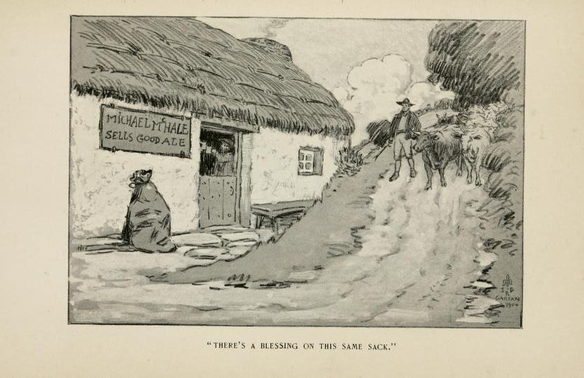

Hudden, and Dudden, and Donald O’Neary#
I first heard the story of Hudden, Dudden and Donald O’Neary (or as I recalled it, Donald, or Donal, O’Leary) from Irish storyteller Eddie Lenihan 25 years or so ago (it’s also available on his Storyteller 1 & 2 CD, on CD2, as “Hudden, and Dudden, and Donal O’Leary”).
I love this story and have told it several times, including as the opening of my Verging on Nonsense (Unexpected Consequences) set.
My own initial researches on archive.org turned up an almost exact equivalent in Thackeray’s Irish Sketch Book, published in 1842, where the story is retold from a chapbook published prior to 1825, that Thackeray had picked up from a bookseller in the town of Ennis.
I also notice from the Liverpool Daily Post (Welsh Edition) of Thursday, 13th October, 1966, that it appeared as the featured story on Jackanory on BBC1 to be broadcast at 4.45pm on that day, just before Blue Peter at 5pm.
A podcast version of the tale is available from the Leprechaun Museum podcast here, starting 8m35 in.
Thackeray’s Version of Hudden and Dudden#
As Thackeray introduces the tale:
Let us give a couple of the little tales entire. They are not so fanciful as those before mentioned, but of the comic sort, and suited to the first kind of capacity mentioned by the author in his preface:
William Thackeray, Hudden and Dudden and Donald O’Neary, 1842
In The Paris sketch book of Mr. M. A. Titmarsh and eastern sketches, a journey from Cornwall to Cairo, the Irish sketch book and character sketches, William Makepeace Thackeray, 1842, [link], pp.169-172.
” Hudden and Dudden and Donald O’Neary were near neighbors in the barony of Ballinconlig, and ploughed with three bullocks ; but the two former, envying the present prosperity of the latter, determined to kill his bullock to prevent his farm being properly cultivated and labored — that, going back in the world, he might be induced to sell his lands, which they meant to get possession of. Poor Donald, finding his bullock killed, immediately skinned it, and throwing the skin over his shoulder, with the fleshy side out, set off to the next town with it, to dispose of it to the best advantage. Going along the road a magpie flew on the top of the hide, and began picking it, chattering all the time. This bird had been taught to speak and imitate the human voice, and Donald, thinking he understood some words it was saying, put round his hand and caught hold of it. Having got possession of it, he put it under his great-coat, and so went on to the town. Having sold the hide, he went into an inn to take a dram ; and, following the landlady into the cellar, he gave the bird a squeeze, which caused it to chatter some broken accents that surprised her very much.
‘ What is that I hear? ‘ said she to Donald : ‘ I think it is talk, and yet I do not understand.’ ‘ Indeed,’ said Donald, ‘ it is a bird I have that tells me everything, and I always carry it with me to know when there is any danger. Faith,’ says he, ‘ it says you have far better liquor than you are giving me.’ ‘ That is strange,’ said she, going to another cask of better quality and asking him if he would sell the bird. ‘ I will,’ said Donald, ‘ if I get enough for it.’ ‘ I will fill your hat with silver if you will leave it with me.’ Donald was glad to hear the news, and, taking the silver, set off, rejoicing at his good luck. He had not been long home when he met with Hudden and Dudden. ‘ Ha ! ‘ said he, ‘ You thought you did me a bad turn, but you could not have done me a better : for look here what I have got for the hide,’ showing them the hatful of silver. ‘ You never saw such a demand for hides in your life as there is at present.’ Hudden and Dudden that very night killed their bullocks, and set out the next morning to sell their hides. On coming to the place they went to all the merchants, but could only get a trifle for them. At last they had to take what they could get, and came home in a great rage and vowing revenge on poor Donald. He had a pretty good guess how matters would turn out, and his bed being under the kitchen-window, he was afraid they would rob him, or perhaps kill him when asleep ; and on that account, when he was going to bed, he left his old mother in his bed, and lay down in her place, which was in the other side of the house, and they, taking the old woman for Donald, choked her in the bed ; but he making some noise, they had to retreat and leave the money behind them, which grieved them very much. However, by daybreak, Donald got his mother on his back, and carried her to town. Stopping at a well, he fixed his mother with her staff as if she was stooping for a drink, and then went into a public-house convenient and called for a dram. ‘ I wish,’ said he to a woman that stood near him, ‘you would tell my mother to come in. ‘She is at yon well trying to get a drink, and she is hard in hearing: if she does not observe you, give her a little shake, and tell her that I want her.’ The woman called her several times, but she seemed to take no notice : at length she went to her and shook her by the arm ; but when she let her go again, she tumbled on her head into the well, and, as the woman thought, was drowned. She, in great fear and surprise at the accident, told Donald what had happened. ‘ O mercy,’ said he, ‘ what is this? ‘ He ran and pulled her out of the well, weeping and lamenting all the time, and acting in such a manner that you would imagine that he had lost his senses. The woman, on the other hand, was far worse than Donald : for his grief was only feigned, but she imagined herself to be the cause of the old woman’s death. The inhabitants of the town, hearing wliat had happened, agreed to make Donald up a good sum of money for his loss, as the accident happened in their place ; and Donald brought a greater sum home with him than he got for the magpie. They buried Donald’s mother ; and as soon as he saw Hudden and Dudden, he showed them the last purse of money he had got. ‘ You thought to kill me last night,’ said he ; ‘ but it was good for me it happened on my mother, for I got all that purse for her to make gunpowder.’
” That very night Hudden and Dudden killed their mothers, and the next morning set off with them to town. On coming to the town with their burden on their backs, they went up and down crying, ‘ Who will buy old wives for gunpowder? ‘ so that every one laughed at them, and the boys at last clodded them out of the place. They then saw the cheat, and vowing revenge on Donald, buried the old women and set off in pursuit of him. Coming to his house, they found him sitting at his breakfast, and seizing him, put him in a sack, and went to drown him in a river at some distance. As they were going along the highway they raised a hare, which they saw had but three feet, and, throwing off the sack, ran after her, thinking by appearance she would be easily taken. In their absence there came a drover that way, and hearing Donald singing in the sack, wondered greatly what could be the matter. ‘ What is the reason,’ said he, ‘ that you are singing, and you condined?’ ‘Oh, I am going to heaven,’ said Donald: ‘and in a short time I expect to be free from trouble.’ ‘ Oh, dear,’ said the drover, ‘ what will I give you if you let me to your place?’ ‘Indeed I do not know,’ said he: ‘ it would take a good sum.’ ‘ I have not much money,’ said the drover ; ‘ but I have twenty head of fine cattle, which I will give you to exchange places with me.’ ‘Well, well,’ says Donald, ‘I don’t care if I should : loose the sack and I will come out.’ In a moment the drover liberated him, and went into the sack himself : and Donald drove home the fine heifers and left them in his pasture.
” Hudden and Dudden having caught the hare, returned, and getting the sack on one of their backs, carried Donald, as they thought, to the river, and threw him in, where he immediately sank. They then marched home, intending to take immediate possession of Donald’s property ; but how great was their surprise, when they found him safe at home before them, with such a line herd of cattle, whereas they knew he had none before? ‘ Donald,’ said they, ‘what is all this! We thought you were drowned, and yet you are here before us?’ ‘ Ah I ‘ said he, ‘ if I had but help along with me when you threw me in, it would have been the best job ever I met with ; for of all the sight of cattle and gold that ever was seen, is there, and no one to own them ; but I was not able to manage more than what you see, and I could show you the spot where you might get hundreds.’ They both swore they would be his friends, and Donald accordingly led them to a very deep part of the river, and lifting up a stone, ‘ Now,’ said he, ‘ watch this,’ throwing it into the stream. ‘ There is the very place, and go in, one of you, first, and if you want help you have nothing to do but call.’ Hudden jumping in, and sinking to the bottom, rose up again, and making a bubbling noise as those do that are drowning, seemed trying to speak but could not. ‘ What is that he is saying now?’ says Dudden. ‘Faith,’ says Donald, ‘he is calling for help — don’t you hear him? Stand about,’ continued he, running back, ‘ till I leap in. I know how to do better than any of you.’ Dudden, to have the advantage of him, jumped in olf the bank, and was drowned along with Hudden. And this was the end of Hudden and Dudden.”
One notable difference between this telling and Eddie Lenihan’s version is that for Lenihan, it is O’Leary’s (rather than O’Neary’s) horse, rather than bullock, that is killed by the two miscreants, Hudden and Dudden.
Thackeray’s Discovery of the Tale#
Thackeray’s discovery of the chapbook is described in the preceding pages of the Irish Sketch Book. For example, at page 134, we learn of the purchase of the book as one of several:
The town [of Ennis] was swarming with people ; the little dark streets, which twist about in all directions, being full of cheap merchandise and its venders. Whether there are many buyers, I can’t say. This is written opposite the market place in Galway, where I have watched a stall a hundred times in the course of the last three hours and seen no money taken : but at every place I come to, I can’t help wondering at the numbers ; it seems market-day everywhere — apples, pigs, and potatoes being sold all over the kingdom. There seem to be some good shops in those narrow streets ; among others, a decent little library, where I bought, for eighteenpence, six volumes of works strictly Irish, that will serve for a half-hour’s gossip on the next rainy day.
On pp.137-8, he discusses the purchases further, commenting wryly on how the publication of fairy tales is already being overtaken by “non-fiction”:
The eighteenpenny worth of little books purchased at Ennis in the morning came here most agreeably to my aid ; and indeed they afford many a pleasant hour’s reading. Like the ” Bibliotheque Grise,” which one sees in the French cottages in the provinces, and the German “Volksbucher,” both of which contain stores of old legends that are still treasured in the country, these yellow-covered books are prepared for the people chiefly ; and have been sold for many long years before the march of knowledge began to banish Fancy out of the world, and gave us, in place of the old fairy tales, Penny Magazines and similar wholesome works. Where are the little harlequin-backed story-books that used to be read by children in England some thirty years ago? Where such authentic narratives as “Captain Bruce’s Travels,” “The Dreadful Adventures of Sawney Bean,” &c., which were commonly supplied to the little boys at school by the same old lady who sold oranges and alycompayne? — they are all gone out of the world, and replaced by such books as “Conversations on Chemistry,” “The Little Geologist,” “Peter Parley’s Tales about the Binomial Theorem,” and the like. The world will be a dull world some hundreds of years hence, when Fancy shall be dead, and ruthless Science (that has no more bowels than a steam-engine) has killed her.
But when he does find “old” collections of fanciful tales, he rejoices in them:
It is a comfort, meanwhile, to come on occasions on some of the good old stories and biographies. These books were evidently written before the useful had attained its present detestable popularity. There is nothing useful here, that’s certain : and a man will be puzzled to extract a precise moral out of the ” Adventures of Mr. James Freeny;” or out of the legends in the ” Hibernian Tales,” or out of the lamentable tragedy of the “Battle of Aughrim,” writ in most doleful Anglo-Irish verse. But are we to reject all things that have not a moral tacked to them? “Is there any moral shut within the bosom of the rose?” And yet, as the same noble poet sings (giving a smart slap to the utility people the while), ” useful applications lie in art and nature,” and every man may find a moral suited to his mind in them ; or, if not a moral, an occasion for moralizing.
A little further on, at p162, Thackeray hints at the title of the work in which he found the tale of Hudden and Dudden and Donald O’Neary:
Two of the little yellow volumes purchased at Ennis are entitled ” The Irish and Hibernian Tales.” The former are modern, and the latter of an ancient sort ; and so great is the superiority of the old stories over the new, in fancy, dramatic interest, and humor, that one can’t help fancying Hibernia must have been a very superior country to Ireland.
These Hibernian novels, too, are evidently intended for the hedge-school universities. They have the old tricks and some of the old plots that one has read in many popular legends of almost all countries, European and Eastern : successful cunning is the great virtue applauded ; and the heroes pass through a thousand wild extravagant dangers, such as could only have been invented when art was young and faith was large. And as the honest old author of the tales says ” they are suited to the meanest as well as the highest capacity, tending both to improve the fancy and enrich the mind,” let us conclude the night’s entertainment by reading one or two of them, and reposing after the doleful tragedy which has been represented. The ” Black Thief” is worthy of the Arabian Nights, I think, — as wild and odd as an Eastern tale.
Over the years, the story would appear in various formas, often credited to Thackeray. For example, it appears in the Roscommon Herald of Saturday 28th October, 1922 under the heading How Thieves Were Caught Long Ago — The Feats of Malden and Dudden and Donald O’Leary. and credited as follows: Thackeray in his ” Irish Sketch Book,” gives the following amusing extracts from an old story book, known as ” The Hibernian Nights’ Entertainment.
The Royal Hibernian Tales#
A little more detail on the original chapbook is provided by Séamus Ó Duilearga in an Editorial Note to a republication of it — The Royal Hibernian Tales — in Béaloideas, Iml. 10, Uimh 1/2 (Jun. - Dec., 1940), pp. 148-203 (56 pages), published by An Cumann Le Béaloideas Éireann (the Folklore of Ireland Society). (A freely available archive scanned version of The Royal Hibernian Tales is also available here.)
The Royal Hibernian Tales is the earliest known collection of Irish popular taleas or marchën, as well as being one of the rarest books in the field of Irish folklore. This little chap-book is an 18mo, and measures 14cm x 8cm; it is gathered alternately in twelves and sixes, contains 108 pp., consisting of title-page (verso blank), prefatory note (verso blank) and text proper, numbered [5]—107 (verso of 107 blank). The book is undated. I have inserted the pagination of the original in this re-issue, and have retained the eccentric punctuation.
That the book is older than 1825 appears from the Reports of the Commissioners of the Board of Education of Ireland in 1825, where, among the list of 300 chap-books of a secular character there enumerated, it is found under the title of “Hibernian Tales.”
The scarce availability of the publication is commented upon:
RHT is extremely rare. There is a copy in the National Library, Dublin, and I know of three copies in private possession. Yeats could not find a copy in London. I am indebted to the kindness of Mrs. P. J. McCall, Sutton, Co. Dublin, for the use of the copy from her late husband’s collection from which the present reprint has been made.
A comment is also made on the likely origins of the original work:
It appears to me that the compiler of this, the first printed book of Irish folk-tales, was — judging by the place-names in the text — either a native of North Antrim, or at least very familiar with its topography. …
But the author of RHT and most of the hundreds of chap-books which circulated in their hundreds of thousands all over Ireland in the late 18th and 19th centuries, and, to a lesser degree, to within the memory of people still living — he and his fellow literary-hacks are unlikely to emerge from the anonymity of over a century. The influence which they exercised by their contributions to this litteratura vulgi is not so considerable here as in Germany, France, England or Scandinavia; but some at least of their tales have from books like RHT passed over into the orally-preserved tradition from which so many of them first drew the breath of life.
Duilearga then dedicates the republication of the tales to those who helped keep them alive originally:
To the memory of the unknown compiler, and of the long-dead generations of those of our people who took delight in reading or in listening to his fireside stories, I dedicate this re-issue of The Royal Hibernian Tales.
Séamus ó Duillearga.
Although no author is mentioned, there is a small amount of prefatory material:
The Royal Hibernian Tales: Being a Collection of the most entertaining stories now extant.
*With laugh, and joke, and merry tale,
The live long winter night,
Each led and late the hours did pass,
With pleasure and delight.I have oftentimes seen, and with pleasure perused the English Nights’ Entertainments, Arabian Nights’ Entertainments, Winter Evening Tales, Persian and Chinese Tales ; and in short, observed that there is no Country but what has given birth te some Native production of this kind . Finding nothing of this kind in Ireland, and knowing a great many curious Tales, handed down to posterity , and held on record throughout the country, which I had an opportunity of hearing in many places; I thought I could not benefit my readers more than by committing them to print for their instruction and amusement. That they are instructive will be clearly seen from the excellent morals that each contains, and all my readers will not hesitate to pronounce them most entertaining. In this little volume there will be found stories adapted to persons of every inclination and disposition ; some strange, others wonderful, some grave, and others ludicrous and merry . The method is plain and easy, suited to the meanest as well as the highest capacity, tending both to enrich the fancy and improve the mind . In fine, what will greatly enhance the value of this production is, that all the stories in it will be found to be genuine, and never before offered to the public.
Inside the book, we find the tale of Hudden and Dudden and Donald O’Neary as a tale entitled Donald and His Neighbours. Thackeray’s version of it seems to be quite faithful to the original.
It is perhaps worth noting that Duilearga’s reissue of the Royal Hibernian Tales was notable enough to merit a mention in the Irish Independent of Tuesday 17 June, 1941, p2:
FOLKLORE Béaloideas: Journal of the Folklore of Ireland Society. Vol. X. Edited by Séamus O Duilearga, M.A. (Educational Co. of Ireland. 10/-
This volume of the Journal of the Folklore Society is a remarkable budget of folk literature in Irish and English; over 300 pages of entertaining reading gleaned from the oral tradition of three provinces, tales, songs and poems, household anecdotes and the like.
While the tales are all excellent of their kind, of greater value to the student of folklore are the accounts of popular games and customs, prayers and invocations, charms, pisreogai and sean-fhochail which have passed from usage and were in danger of fading even from memory.
One can read in ” Bealoideas” a personal recollection of the ” bataf scoir ” or barbarous system of tallysticks employed in enforcing an English vernacular on the Irish speaking children of Mayo down to a couple of generations ago; of rare birds and beasts, including the wild cat packs that used haunt the cliffs of West Munster; of how tea came to the country, and kindred fireside lore. Perhaps the most interesting single item is a reprint of the rare chap-book, “Royal Hibernian Tales,” which was widely used as a reader in the hedgeschools of Penal days.
T. O’H.
Hudden and Dudden in Irish National Folklore Schools’ Collection#
At least twelve versions of the tale of Hudden and Dudden and Donald O’Leary appear in the Irish National Folklore Schools’ collection, as compiled by school children in Ireland in the 1930s [link to search results].
A Version in Irish Folk Tales (Penguin)#
More recently, the tale of Hudden and Dudden and Donald O’Leary also appears (as Huddon and Duddon and Donald O’Leary) in the Penguin Folklore Library edition Irish Folk Tales, edited by Henry Glassie, 1985, attributed to Hugh Nolan, of Fermanagh, and collected by Henry Glassie in 1972. The notes associated with the tale also review its history.
Glassie’s notes on the tale, 1985
HUDDON AND DUDDON AND DONALD O’LEARY
Unpublished. Tape-recorded from Hugh Nolan, November 28, 1972. I also recorded this tale from Mr. Nolan on June 11, 1977. The history of this story provides us a good means for the creativity of the storyteller who must, Mr. Nolan said, repeat the tale accurately while using words of his own. Mr. Nolan learned the story from a Christmas number of the Fermanagh Herald, published in Enniskillen. Although the paper’s editor, Mr. P. J. O’Hare, could not find it when he generously searched his files for me, the story was surely reprinted from W. B. Yeats’ “Donald and his Neighbours,” in Fairy and Folk Tales of the Irish Peasantry (1888), reprinted in Fairy and Folk Tales of Ireland (1973), pp. 270-273. Yeats got the story from a chapbook, Royal Hibernian Tales, published in 1825. Before that it had been in oral circulation in County Antrim, and it is Aarne-Thompson international tale type 1535, which is especially common in India and Germany, and which I have heard in the southern United States and once published: “Three Southern Mountain Jack Tales,” Tennessee Folklore Society Bulletin 30, no. 3 (1964): 88-102 (which also includes a version of type 300, Ireland’s most usual Marchën). Michael Boyle learned the story from Hugh Nolan, and their tellings made it the most popular “fireside tale” of the next generation in Ballymenone. Mr. Nolan’s story is longer and richer than his source. Here, for comparison, is the opening of the tale as Mr. Nolan would have read it: “Hudden and Duddon and Donal O’Neary we near neighbours in the barony of Balinconlig, and ploughed with three bullocks; but the two former, envying the present prosperity of the latter, determined to kill his bullock, to prevent his farm being properly cultivated and laboured, that going into the world he might be induced to sell his lands, which they meant to get possession of.” The whole text of the original is not only in Yeats’ anthology; it is in Béaloides 10 (1940) pp. 184-186, and Séamas Ó Catháin, The Bedside Book of Irish Folklore (1980), pp. 51-55. You would find it fascinating to read read Mr. Nolan’s oral performance against the entire written text from which he learned the tale.
A search of the British Newspaper Archive turns up a version of the story in the Fermanagh Herald - Saturday 11 December 1909, p16 (it also appeared in the Frontier Sentinel, p16 on the same day), turns up a different version, where the protaganist is Daniel O’Leary, rather then Donald O’Neary, as follows:
In the Fermanagh Herald, 1909
IRISH FOLK LORE STORY.
DANIEL O’LEARY ; OR THE THREE NEIGHBOURS.
Sent by M. H. MAGUIRE, Fivemiletown
The Bullock.–Chapier I.
ONCE upon a time there lived in this country three neighbours named Huddon, and Duddon, and Daniel O’Leary. The three were ummarriad, and lived with three aged mothers; each one owned a small plot of land, which was their sole property, save a strong bullock„ which each man posseseed. In their spare time they were employed by those people who were less fortunate than themselves, to do those odd jobs, as they were called, which would be impossible to accomplish without the aid of one of the bullocks.
Now as Daniel O’Leary was the most obliging of the three, or as the peasants said, good natured, he, to the disgust of the others, was employed to do every single turn for miles around, and some would wait for days, even weeks, to secure O’Leary to do their wee turns. This state of affairs did not improve the temper of Huddon and Duddon, you may be sure, and in their evil hearts they thought that if Daniel O’Leary’s bullock was out of the way there would be nothing to keep them out of employment. So accordingly Daniel woke up one morning to find the animal lying dead. His feelings can be better imagined than described, for in his heart he knew that cruel hands had been at work. However, he had to make the best of things so he set to work at once to remove the hide off the poor beast, as he thought to himself—this was the last of much money his bullock could ever earn for him.
The two neighbours, seeing something was amiss with O’Leary, came over to inquire the cause. When they saw what was the trouble of course they were very sorry. O’Leary, however, knew the depth of their grief. When the task of removing the skin was completed O’Leary set off to the town, a small village a few miles distant. He had not gone very far when a snow storm came on—so having not the luxury of an overcoat he put the skin about his shoulders and it draped him down almost as well as an overcoat could have done. To quote the words of the song: “He had the skinny side out, and the hairy side in.” He marched on in this guise for some time, but before long a magpie which had been feeling the storm keenly came to pick at the skin. O’Leary, on perceiving it, put out his hand and caught it. He reached the village, where he disposed of the skin for the very small sum of 4s 6d. “Well,” said he to himself, “things can’t be much worse anyway, so I’ll get a weep drop to warm me before I start for home.” So in he went to Miss Gallagher’s, the publican, a superstitious old maid, and ordered a glass of the best.
The lady began to draw the measure out of the cask, and O’Leary gave the bird a pinch, which caused it to give a squeak.
The lady turned in some alarm and asked what was the sound she had heard.
O’Leary said it was a bird which he carried about with him that could tell him everything.
“And pray what was that it said just now” asked Miss Gallagher.
“It says you have better liquor than that if you liked to give it.”
“Faith, an’ that’s no lie,” replied she, laughing, serving O’Leary now from a different cask.
“Would you part with that bird, Daniel,” the lady asked.
“Well,” replied O’Leary, thinking deeply, “I was thinking lately that I would be obliged to sell it.”
“Will you take forty pounds for it?”
“No,” replied O’Leary, turning as if to go. “It is worth twice that.”
“Stay,” cried she; “here is fifty sovereigns.”
O’Leary accepted this, and another glass of whisky finished the bargain.
When O’Leary returned home his two neighbours came over to inquire how he had sold the skin. O’Leary pulled fifty sovereigns out of his pocket and said: “There is any money for bullock skins.”
The two men went home, killed their bullocks, and started early next morning for town to sell the skins. But evidently the rage was over for they could get no more than 4s 6d. They told the dealer that Daniel O’Leary had got fifty pounds for his only the day before. The man got angry, and said he had no time to listen to fairy tales; so seeing they could get no more they had to accept the small sum. They were very angry with O’Leary for they now saw in some mysterious way they were the victims of a serious joke.
New Gunpowder.—Chapter II.
These two men knew very well the interior of O’Leary’s cabin. The bed in which O’Leary lay was underneath a hole in the wall which served as a window, but it was always kept filled with large stones. So the two men resolved to creep silently during the night and if possible to kill O’Leary by tumbling the contents on top of him in the bed. During the day the old and infirm woman, Mrs. O’Leary, who had been ailing for some time, had passed peacefully away. O’Leary, however, kept quiet, for he knew that the anger against him was now tenfold. When bedtime arrived O’Leary extinguished the rush candle and went into the room, the place occupied by his late mother. At the appointed time the window was tumbled in and O’Leary would be dead or very near it in the morning. On going out next morning they were horrified to see O’Leary starting with the dead woman on his back. Concealing their anger as well as they could they went over and expressed their regret at the old woman’s death. O’Leary said nothing, but went on in the direction of the village. At the end of the town was a certain spring-well which served to supply the whole village. At this O’Leary left his mother standing leaning on a stick, and apparently gazing into the well. He walked away a few paces when he met a servant girl coming for a pail of water. He told her to tell his mother to come on, and if she did not hear her to give her a shake, as she suffered greatly from deafness. The girl told her to go on but the woman seemed not to hear her so she gave her a little shake. She had no sooner touched her when the woman fell into the well, and, of course, was drowned. The roars of O’Leary attracted the attention of the villagers. The girl fainted and a long time elapsed ere the woman’s body was recovered from the well. O’Leary was beside himself with grief. A generous subscription was gathered amounting to over forty pounds. In due course the woman was buried and O’Leary once more turned his steps homewards. As he neared his cottage he was met by Huddon and Duddon to see how he fared at the funeral.
“I did not bury her at all,” answered O’Leary. “I tell ypu what it is, there is any money for old women to make gunpowder.”
The men found this very hard to believe, but when O’Leary counted once more fifty sovereigns there was no longer any room for doubt. Both men went home and whatever happened, O’Leary had the satisfaction of seeing both start, each one carrying a dead woman on their back. When they reached the village they went up and down the street shouting: “Anyone wanting old women to make gunpowder?”
They soon attracted the attention of Sergt. O’Reilly, who brought them before the Bench. They pleaded that they were on there way to bury them when told them that people were buying old women to make gunpowder out of them. On account of their ignorance they were let off and told to bury them at once. When the burial was over the now infuriated men set out home. Their anger knew no bounds. They were determined to take Daniel O’Leary’s life at all costs.
O Leary’s Paradise— Chapter III.
They soon reached O’Leary’s cottage where, without ceremony, they secured him, put him in a bag, and started off to the river to drown him, accompanied by a couple of dogs. On the way the dogs were giving chase to a hare. The men dropped the bag and followed in pursuit. Almost immediately, O’Leary heard a sound as if of someone driving cattle; be recognised the voice, it was that of a local cattle-dealer. Secured as he was, he commenced to sing a song in the liveliest tones possible. The dealer stood still and listened. He knew the tone of O’Leary’s voice, and at once called out: “Daniel O’Leary, what are you doing in the bag?”
“Never mind,” said O’Leary, “I am going to heaven. In less than half-an-hour I shall be in the mansion of the golden gates; am so happy I would not change places with the king.”
The man listened in silence, and then said: “O’Leary, you are lucky, I would give all I possess in the world to be in your place; I have £6O in gold and seven head of cattle which I will give over to you if you let me into the bag.”
“Alright,’ said O’Leary, “since you are so anxious I may as well let you go first; besides I can go any time.”
The bag was loosed, O’Leary got out, put the dealer in his place, secured the bag, and marched home driving seven head of cattle and carrying the contents of the dealer’s purse with him.
The River Scene. -Chapter IV.
In the meantime the men returned, caught up the bag, and proceeded to the river. Before leaving the dealer, however, O’Leary warned him not to speak until he would stand on the pearly streets, This was the only penance, he assured him, he would have to suffer. The river was reached, the bag was pitched in, they waited until it had sank for the last time and then they returned home, and being tired with the day’s work they retired to rest at once, but were awakened betimes next morning by the shouts of O’Leary driving cattle to and fro. They could not believe their ears. As soon as they could scramble up they rushed out and no mistake O’Leary was there, and the owner of a large group of cattle. “You thought you were doing me a bad turn,” shouted O’Leary, “by throwing me into the river, but you could not have done me a better one, for here I am the owner of plenty of cattle whilst you go on making nothing but mistakes. There are as many cattle at the bottom of the river as would stock the king’s demesne.” The two neighbours now begged him to show them the place in the river that they, too, might enjoy some of the treasures. O’Leary was persuaded to accompany them to the river. “There,” said he, “is the spot you will find them grazing quietly at the bottom of the river.” Huddon was the first to go in, He sank at once but same up again mumbling something.
“What was that he said,” asked Duddon.
“He says,” said O’Leary, “that he wants more help I think. I shall go in myself.”
“No,” roared Duddon, “it is my turn now,” so in he jumps.
O’Leary, always triumphant, had his fullest ambitions realized. He turned for home, and as he did so he could not help singing to himself: “I’m monarch of all I survey.” He lived happy ever afterwards, and if he’s not dead is living still.
So now, dear readers, I will conclude, wishing you all a merry Christmas.
For comparison, we can look at the opening of Nolan’s transcribed telling, where we see some embellishment of the character of Donald O’Leary, and a rationale for why and how Hudden and Dudden wished harm to his bullock:
Nolan’s opening…
Page 285:
Huddon and Duddon and Donald O’Neary was three neighbours that lived in this country a long time ago, when the people wasn’t very well off, and they had little different ways of making their living.
So these three men, what they made their living by was: each man had a bullock. And in that part of the country where they lived, hauling and drawing, what would be done in other parts by horses, was done be bullocks.
So anyway, one man would be trying to get all of the work that he could to knock the other man out, and that was the way they carried on. But they were still getting a little that was keeping them going.
But Donald O’Leary was the favourite of the people of the locality. He was a pleasant sort of a man, and he wasnlt too hard to pay, and he was very obliging. And the other two men was different from him in many ways.
So anyway, the way it was with the people of the locality, if two or three wanted him on the one day, well, some two would wait till next day before they’d employ either of the other two men.
So that left the other two that they got very jealous with Donald. And they came to the conclusion that the proper way of dealing with him was to kill his bullock. And he wouldn’t be able to get another.
Elsewhere in the tale, we see the mention of rain, rather than hail, similar amounts for the payments, and a reference to the police encounter. So Nolan’s account does appear to resemble the Fermanagh Herald account, albeit the name has changed, perhaps according to other versions of the tale that Nolan had heard. So it seems as if Nolan may have learned his version from the Fermanagh Herald version printed in 1909, around Christmas time, with a winter greeting, and that the amount of time that had lapsed was perhaps why “the paper’s editor, Mr. P. J. O’Hare, could not find it when he generously searched his files”.
Little Fairly#
Another version of the tale can be found in an extended form, in an Irish vernacular, in Samuel Lover’s Legends and stories of Ireland.
I’m not sure if the following is being used as a storyteller’s device to help get the audience into a state where they are primed and ready to receive a story, but I know that I am often most comfortable telling a tale if I can provide some introductory context that helps me settle my own voice, as well as helping shift the audience from their chatting-to-the-person-next-to-them frame of mind to one where they are ready to listen to a tale.
The world was very guilty of such a ballad some three ages since; but I think, now ‘tis not to be found — I will have the subject newly writ o’er, that I may example my digression by some mighty precedent.
Love’s Labour’s Lost.The words great and little are sometimes contradictory terms to their own meaning. This is stating the case rather confusedly, but as I am an Irishman, and writing an Irish story, it is the more in character. I might do, perhaps, like a very clever and agreeable friend of mine, who, when he deals in some extravagance which you don’t quite understand, says, ” Well, you know what I mean.” But I will not take that for granted, so what I mean is this — that your great man, as far as size is concerned, is often a nobody ; and your little man is often a great man. Nature, as far as the human race is concerned, is at variance with Art, which generally couples greatness with size. The pyramids, the temple of Jupiter Olympius, St. Peter’s, and St. Paul’s, are vast in their dimensions, and the heroes of Painting and Sculpture are always on a grand scale. In Language, the diminutive is indicative of endearment — in Nature, it appears to me, it is the type of distinction. Alexander, Caesar, Napoleon, Wellington, &c. &c, (for I have not room to detail,) are instances. But do we not hear every day that ” such-abody is a big booby,” while “a clever little fellow” has almost passed into a proverb. The poets have been more true to nature than painters, in this particular, and in her own divine art, her happiest votaries have been living evidences of her predilection to ” packing her choicest goods in small parcels.” Pope was ” a crooked little thing that asked questions,” and in our own days, our own “little Moore ” is a glorious testimony to the fact. The works of fiction abound with instances, that the author does not consider it necessary his hero shall be an eligible candidate for the “grenadier corps ;” the earlier works of fiction in particular : Fairy tales, universally, dedicate some giant to destruction at the hands of some ” clever little fellow.” ” Tom Thumb,” ” Jack and the Bean Stalk,” and fifty other such, for instance, and I am now going to add another to the list, a brilliant example I trust, of the unfailing rule, that your little man is always a great man.
If any gentleman six feet two inches high gets angry at reading this, I beg him to remember that I am a little man myself, and if he be a person of sense, (which is supposing a great deal,) he will pardon, from his own feeling of indignation at this exposé of Patagonian inferiority, the consequent triumph on my part, of Lilliputian distinction. If, however, his inches get the better of him, and he should call me out, I beg of him to remember again, that I have the advantage of him there too, in being a little man. There is a proverb also, that “little said is soon mended,” and with all my preaching, I fear I have been forgetting the wholesome adage. So I shall conclude this little introduction, which I only thought a becoming flourish of trumpets for introducing my hero, by placing Little Fairly before my readers, and I hope they will not think, in the words of another adage, that I have given them great cry and little wool.
Just before getting in to the story proper, I’d lke to remark on the following fragment which I think could be part of a beatiful st-up for an unrolling, mutli-part call-back:
and I lave you that six shillings, and five stone o’ mouldy oats that’s no use to me, and four broken plates, and that three-legged stool you stood upon to get at the cupboard, you poor nharrough that you are, and the two spoons without handles, and the one cow that’s gone back of her milk.”
But that’s one to ponder… Now, on with the story…
Little Fairly, Samuel Lover, 1860
Legends and stories of Ireland, Samuel Lover, 1866, pp. 351-380.
LITTLE FAIRLY.
You see owld Fairly was a mighty dacent man that lived, as the story goes, out over the back o’ the hills beyant there, and was a thrivin’ man ever afther he married little Shan Ruadh’s [Red John's] daughter, and she was little, like her father before her, a dawnshee craythur, but mighty cute, and industhered a power always, and a fine wife she was to a sthrivin’ man, up early and down late, and shure if she was doin’ nothin’ else, the bit iv a stocking was never out iv her hand, and the knittin’ needles goin’ like mad. Well, sure they thruv like a flag or a bulrush, and the snuggest cabin in the counthry side was owld Fairly’s. And, in due coorse, she brought him a son, (throth she lost no time about it either, for she was never given to loitherin’,) and he was the picthur o’ the mother, the little ottomy that he was, as slim as a ferret and as red as a fox, but a hardy craythur. Well, owld Fairly didn’t like the thoughts of havin’ sitch a bitiv a brat for a son, and besides he thought he got on so well and prospered in the world with one wife, that by gor, he detarmined to improve his luck and get another. So with that, he ups and goes to one Doody, who had a big daughter — a wopper, by my sowl, throth she was the full of a door, and was called by the neighbours garran more [Big horse], for in throth she was a garran, the dirty dhrop was in her, a nasty stag that never done a good turn for any one but herself, the long-sided jack that she was; but her father had a power o money, and above a hundher head o’ cattle, and devil a chick nor child he had but herself; so that she was a great catch for whoever could get her, as far as the fortin’ went ; but throth the boys did not like the looks iv her, and let herself and her fortin’ alone. Well, as I was sayin’, owld Fairly ups and goes to Doody and puts his comether an the girl, and faix she was glad to be ax’d, and so matthers were soon settled, and the ind of it was they wor married.
Now may be it’s axin’ you’d be, how he could marry two wives at wanst ; but I towld you before, it was long ago, in the good owld ancient times, whin a man could have plinty of every thing. So home he brought the dirty garran, and sorra long was she in the place whin she began to breed, (arrah, lave off and don’t be laughin’ now; I don’t mane that at all,) whin she began to breed ructions in the fam’ly and to kick up antagions from mornin’ till night, and put betune owld Fairly and his first wife. “Well, she had a son of her own soon, and he was a big boss iv a divil, like his mother — a great fat lob that had no life in him at all ; and while the little daunshee craythur would laugh in your face and play wid you if you cherrup’d to him, or would amuse himself the craythur, crawlin’ about the flure and playin’ wid the sthraws, and atein’ the gravel, the jewel, — the other bosthoon was roarin’ from mornin’ till night, barrin’ he was crammed wid stirabout and dhrownded a’most wid milk. Well, up they grew, and the big chap turned out a gommoch, and the little chap was as knowin’ as a jailor ; and though the big mother was always puttin’ up her lob to malthrate and abuse little Fairly, the dickins a one but the little chap used to sarcumvint him, and gev him no pace, and led him the life iv a dog wid the cunnin’ thricks he played an him. Now, while all the neighbours a’most loved the ground that little Fairly throd on, they cudn’t abide the garran more’s foal, good, bad, or indifferent, and many’s the sly malavoguein’ he got behind a hedge, from one or another, when his father or mother wasn’t near to purtect him, for owld Fairly was as great a fool about him as the mother, and would give him his eyes a’most to play marvels, while he didn’t care three thraneens for the darlint little chap. And ‘twas the one thing as long as he lived ; and at last he fell sick, and sure many thought it was a judgment an him for his unnathrel doin’s to his own flesh and blood, and the sayin’ through the parish was from one and all, ” There’s owld Fairly is obleeged to take to his bed ivith the iceight of his sins.” And sure enough off o’ that same bed he never riz, but grew weaker and weaker every day, and sint for the priest to make his sowl, the wicked owld sinner, God forgive me for sayin’ the word, and sure the priest done whatever he could for him ; but afther the priest wint away he called his two wives beside his bed, and the two sons, and says he, ” I’m goin’ to lave yiz now,” says he, ” and sorry I am,” says he, ” for I’d rather stay in owld Ireland than go anywhere else,” says he, ” for a raison I have — heigh! heigh! heigh! — Oh, murther, this cough is smotherin’ me, so it is. Oh, wurra ! wurra ! but it’s sick and sore I am. Well, come here yiz both,” says he to the women, ” you wor good wives both o’ ye ; I have nothin’ to say agin it — (Molly, don’t forget the whate is to be winny’d the first fine day) — and ready you wor to make and to mend (Judy, there’s a hole in the foot of my left stockin’), and “
” Don’t be thinkin’ o’ your footin’ here,” says little Judy, the knowledgable craythur, as she was, ” but endayvour to make your footin’in heaven” says she, “mavourneen.”
” Don’t put in your prate ‘till you’re ax’d,” says the owld savage, no ways obleeged that his trusty little owld woman was wantin’ to give him a helpin’ hand tow’rds puttin’ his poor sinful soul in the way o’ glory.
” Lord look down an you ! ” says she.
” Tuck the blanket round my feet,” says he, ” for I’m gettin’ very cowld.”
So the big old hag of a wife tucked the blankets round him.
” Ah, you were always a comfort to me,” says owld Fairly.
” Well, remember my son for that same,” says she, ” for it’s time I think you’d be dividin’ what you have bechuxt uz,” says she.
” Well, I suppose I must do it at last,” says the owld chap, ” though — hegh ! hegh ! hegh ! Oh this thievin’ cough — it’s hard to be obleeged to lave one’s hard aimins and comforts this a-way,” says he, the unfort’nate owld thief, thinkin’ o’ this world instead of his own poor sinful sowl.
“Come here big Fairly,” says he, “my own bully boy, that’s not a starved poor ferret, but worth while lookin’ at. I lave you this house,” says he.
” Ha!” says the big owld sthrap, makin’ a face over the bed at the poor little woman that was cryin’ the craythur, although the owld villian was usin’ her so bad.
” And I lave you all my farms,” says he.
” Ha !” says the big owld sthreel again.
” And my farmin’ ingraydients” says he.
” Ha !” says she again, taken’ a pinch o’ snuff.
” And all my cattle,” says he.
«’ Did you hear that, ma’am ?” says the garran more, stickin’ her arms a kimbo, and lookin’ as if she was goin’ to bate the woman.
” All my cattle,” says the owld fellow, ” every head,” says he, ” barrin’ one, and that one is for that poor scaldcrow there,” says he, “little Fairly.”
” And is it only one you lave my poor boy ?” says the poor little woman.
” If you say much,” says the owld dyin’ vagabone, ” the divil recave the taste of any thing I’ll lave him or you,” says he.
” Don’t say divil, darlin’ “
” How’d your prate I tell you, and listen to me. I say, you little Fairly — “
” Well, daddy,” says the little chap.
” Go over to that corner cupboard,” says he, ” and in the top shelf,” says he, ” in the bottom of a crack’ d taypot, you’ll find a piece of an owld rag, and bring it here to me.”
With that little Fairly went to do as he was bid, but he could not reach up so high as the corner cupboard, and he ran into the next room for a stool to stand upon to come at the crack’ d taypot, and he got the owld piece iv a rag and brought it to his father.
” Open it,” says the father.
” I have it open now,” says little Fairly.
” What’s in it,” says the owld boy.
” Six shillin’s in silver, and three farthin’s,” says little Fairly.
” That was your mother’s fortune,” says the father, ” and I’m going to behave like the hoighth of a gentleman, as I am,” says he ; ” and I hope you won’t squandher it,” says he, ” the way that every blackguard now thinks he has a right to squandher ani decent man’s money he is heir to,” says he, ” but be careful of it,” says he, ” as I was, for I never touched a rap iv it, but let it lay gotherin’ in that taypot, ever since the day I got it from Shan Ruadh, the day we sthruck the bargain about Judy, over beyant at the ‘ Cat and Bagpipes,’ comin’ from the fair; and I lave you that six shillings, and five stone o’ mouldy oats that’s no use to me, and four broken plates, and that three-legged stool you stood upon to get at the cupboard, you poor nharrough that you are, and the two spoons without handles, and the one cow that’s gone back of her milk.”
” What use is the cow, daddy,” says little Fairly, ” widout land to feed her an ?”
“Maybe it’s land you want, you pinkeen,” says the big brother.
” Right, my bully boy,” says the mother, ” stand up for your own.”
” Well, well,” says the owld chap, ” I tell you what, big Fairly,” says he, ” you may as well do a dacent turn for the little chap, and give him grass for his cow. I lave you all the land,” says he, ” but you’ll never miss grass for one cow,” says he, “and you’ll have the satisfaction of bein’ bountiful to your little brother, bad cess to him for a starved hound as he is.”
But, to make a long story short, the ould chap soon had the puff out iv him ; and when the wake was over, and that they put him out to grass — laid him asleep, snug, with a daisy quilt over him — throth that minit the poor little woman and her little offsprig was turned out body and bones, and forced to seek shelter any way they could.
Well, little Fairly was a cute chap, and so he made a little snug place out of the back iv a ditch, and wid moss, and rishes, and laves, and brambles, made his owld mother snug enough, until he got a little mud cabin built for her, and the cow gev them milk, and the craythurs got on purty well, until the big dirty vagabone of a brother began to grudge the cow the bit o’ grass, and he ups and says he to little Fairly one day, ” What’s the raison,” says he, “your cow does be threspassin’ an my fields ?” says he.
” Sure and wasn’t it the last dyin’ words o’ my father to you,” says little Fairly, ” that you would let me have grass for my cow?”
” I don’t remember it,” says tig Fairly — the dirty naygur, who was put up to all by the garran more, his mother.
” Yiv a short memory,” says little Fairly.
“Yis, but I’ve a long stick,” says the big chap, shakin’ it at him at the same time, ” and I’d rekimmind you to keep a civil tongue in your head,” says he.
” You’re mighty ready to bate your little brother ; but would you fight your match ?” says little Fairly.
” Match or no match,” says big Fairly, “I’ll brake your bones if you give me more o’ your prate,” says he ; ” and I tell you again, don’t let your cow be threspassin’ an my land, or I warn you that you’ll be sorry,” and off he wint.
Well, little Fairly kept nevermindin’ him, and brought his cow to graze every day on big Fairly’s land ; and the big fellow used to come and hish her off the land, but the cow was as little and cute as her masther — she was a Kerry cow, and there’s a power o’ cuteness comes out o’ Kerry. Well, as I was sayin’, the cow used to go off as quiet as a lamb ; but the minit the big bosthoon used to turn his back, whoo! my jewel, she used to leap the ditch as clever as a hunter, and back wid her again to graze, and faix good use she made of her time, for she got brave and hearty, and gev a power o’ milk, though she was goin’ back of it shortly before, but there was a blessin’ over Fairly, and all belongin’ to him, and all that he put his hand to thruv with him. Well, now I must tell you what big Fairly done — and the dirty turn it was ; but the dirt was in him ever and always, and kind mother it was for him. Well, what did he do but he dug big pits all through the field where little Fairly’s cow used to graze, and he covers them up with branches o’ threes and sods, makin’ it look fair and even, and all as one as the rest o’ the field, and with that he goes to little Fairly, and says he, ” I tould you before,” says he, ” not to be sendin’ your little blackguard cow to threspass on my fields,” says he, ” and mind I tell you now, that it won’t be good for her health to let her go there again, for I tell you she’ll come to harm, and it’s dead she’ll be before long.”
” Well, she may as well die one way as another,” says little Fairly, ” for sure if she doesn’t get grass she must die, and I tell you again, divil an off your land I’ll take my cow.”
” Can’t you let your dirty cow graze along the road side ?” says big Fairly.
” Why then do you think,” says little Fairly, answering him mighty smart, ” do you think I have so little respect for my father’s cow as to turn her out a beggar an the road to get her dinner off the common highway ? throth I’ll do no sitch thing.”
“Well, you’ll soon see the end ivit,” says big Fairly, and off he wint in great delight, thinking how poor little Fairly’s cow would be killed. And now wasn’t he the dirty, threacherous, black-hearted villain, to take advantage of a poor cow, and lay a thrap for the dumb baste ? — but whin the dirty dhrop is in, it must come out. Well, poor Fairly sent his cow to graze next mornin’, but the poor little darlin’ craythur fell into one o’ the pits and was kilt ; and when little Fairly kem for her in the evenin’ there she was cowld and stiff, and all he had to do now was to sing drimmin dhu dheelish over her, dhrag her home as well as he could, wid the help of some neighbours that pitied the craythur and cursed the big bosthoon that done such a threacherous turn.
Well, little Fairly was the fellow to put the best face upon every thing ; and so, instead of givin’ in to fret, and makin’ lamentations that would do him no good, by dad he began to think how he could make the best of what happened, and the little craythur sharpened a knife immediately and began to skin the cow, ” and anyhow,” says he, ” the cow is good mate, and my owld mother and me ‘ill have beef for the winther.”
” Thrue for you, little Fairly,” said one of the neighbours was helpin’ him, ” and besides, the hide ‘ill be good to make soJes for your brogues for many a long day.”
“Oh, I’ll do betther with the hide nor that,” says little Fairly.
” Why what better can you do nor that wid it :” says the neighbour.
” Oh, I know myself,” says little Fairly, for he was as cute as a fox as I said before, and wouldn’t tell his saycrets to a stone wall, let alone a companion. And what do you think he done with the hide? Guess now — throth I’d let you guess from this to Christmas, and you’d never come inside it. Faix it was the complatest thing ever you heerd. What would you think but he tuk the hide and cut six little holes in partic’lar places he knew av himself, and thin he goes and he gets his mother’s fortin, the six shillin’s I told you about, and he hides the six shillin’s in the six holes, and away he wint to a fair was convenient, about three days afther, where there was a great sight o’ people, and a power o’ sellin’ and buyin’, and dhrinkin’ and fightin’, by course, and why nat ?
Well, Fairly ups and he goes right into the very heart o’ the fair, an’ he spread out his hide to the greatest advantage, and he began to cry out (and by the same token, though he was little he had a mighty sharp voice, and could be heard farther nor a bigger man), well he began to cry out, ” Who wants to buy a hide ? — the rale hide — the owld original goolden bull’s hide that kem from furrin parts, — who wants to make their fortin’ now?”
” What do you ax for your hide ? ” says a man to bin..
” Oh, I only want a thrifle for it,” says Fairly, ” seein’ I’m disthressed for money, at this present writin,” says he, ” and by fair or foul manes I must rise the money,” says he, ” at wanst, for if I could wait, it’s not the thrifle I’m axin now I’d take for the hide.”
” By gor you talk,” says the man, ” as if the hide was worth the King’s ransom, and I’m thinkin’you must have a great want of a few shillin’s,” says he, ” whin the hide is all you have to the fore, to dipind an.”
” Oh, that’s all you know about it,” says Fairly, ” shillin’s indeed ! by gor it’s handfuls o’ money the hide is worth. Who’ll buy a hide — the rale goolden bull’s hide ! ! ! “
” What do you ax for your hide ?” says another man.
” Only a hundher guineas,” says little Fairly.
” A hundher what?” says the man.
” A hundher guineas,” says Fairly.
” Is it takin’ lave of your siren small sinses you are ?” says the man.
“Why thin indeed I b’lieve I am takin’ lave o’ my sinses sure enough,” says Fairly, ” to sell my hide so chape.”
“Chape,” says the man, ” arrah thin listen to the little mad vagabone,” says he to the crowd that was gother about by this time, ” listen to him askin’ a hundher guineas for a hide.”
” Aye,” says Fairly, ” and the well laid out money it ‘ill be to whoever has the luck to buy it. This is none o’ your common hides — it’s the goolden bull’s hide, — the Pope s goolden bull’s hide, that kem from furrin parts, and it’s a fortune to whoever ‘ill have patience to bate his money out iv it.”
“How do you mane?” says a snug owld chap, that was always poachin’ about for bargains — ” I never heerd of batin’ money out of a hide,” says he.
” Well, then, I’ll show you,” says Fairly, ” and only I’m disthressed for a hundher guineas, that I must have before Monday next,” says he, ” I wouldn’t part wid this hide ; for every day in the week you may thrash a fistful o’ shillin’s out iv it, if you take pains, as you may see.” And wid that, my jew’l, he ups wid a cudgel he had in his hand, and he began leatherin’ away at the hide ; and he hits it in the place he knew himself, and out jump’d one o’ the shillin’s he hid there. ” Hurroo!” says little Fairly, ” darlint you wor, you never desaived me yet ! !” and away he thrashed agin, and out jumped another shillin’ ” That’s your sort !” says Fairly, ” the divil a sitch wages any o’ yiz ever got for thrashin’ as this ” — and then another whack, and away wid another shillin.
” Stop, stop !” says the owld cravin’ chap, ” I’ll give you the money for the hide,” says he, “if you’ll let me see can I bate money out iv it.” And wid that he began to thrashthehide, and, by course, another shillin ‘jumped out.
” Oh ! its yourself has the rale twist in your elbow for it,” says Fairly; ” and I see by that same, that you’re above the common, and desarvin’ of my favour.”
Well, my dear, at the word ” desarvin’ o’ my favour,” the people that was gother round, (for by this time all the fair a’most was there), began to look into the rights o’ the thing, and, one and all, they agreed that little Fairly was one o’ the ‘ good people ;’ for if he wasn’t a fairy, how could he do the like ? and, besides he was sitch a dawnshee craythur they thought what else could he be ? and says they to themselves, ” That owld divil, Mulligan, it’s the likes iv him id have the luck iv it ; and let alone all his gains in this world, and his scrapin’ and screwin’, and it’s the fairies themselves must come to help him, as if he wasn’t rich enough before.” Well, the owld chap paid down a hundher guineas in hard goold to little Fairly, and off he wint wid his bargain.
” The divil do you good wid it,” says one, grudgin’ it to him.
” What business has he wid a hide?” says another, jealous of the old fellow’s luck.
“Why nat?” says another, “sure he’d shkin a flint any day, and why wouldn’t he shkin a cow.”
Well, the owld codger wint home as plased as Punch wid his bargain ; and indeed little Fairly had no raison not to be satisfied, for in throth, he got a good price for the hide, considherin’ the markets wasn’t so high then as they are now, by rayson of the staymers, that makes gintlemin iv the pigs, sendin’ them an their thravels to furrin parts, so that a rasher o’ bacon in poor Ireland is gettin’ scarce even on a Aisther Sunday. [On Easter Sunday, in Ireland, whoever is not proscribed, by the dire edicts of poverty, from the indulgence, has a morsel of meat on Easter Sunday, as a bonne bouche after the severe fasting in Lent, enjoined by the Roman Catholic Church.]
You may be sure the poor owld mother of little Fairly was proud enough when she seen him tumble out the hard goold an the table forninst her, and ” my darlint you wor,” says she, ” an’ how did you come by that sight ‘o’ goold?”
” I’ll tell you another time,” says little Fairly, ” but you must set off to my brother’s now, and ax him to lind me the loan iv his scales.”
” Why, what do you want wid a scales, honey?” says the owld mother.
” Oh ! I’ll tell you that another time too,” says little. Fairly; ” but be aff now and don’t let the grass grow undher your feet.”
Well, off wint the owld woman, and may be you’d want to know yourself what it was Fairly wanted wid the scales. Why, thin, he only wanted thim just for to make big Fairly curious about the matther, that he might play him a thrick, as you’ll see by-an-by.
Well, the little owld woman wasn’t long in bringin’ back the scales, and whin she gave them to little Fairly, “There, now,” says he, “sit down beside the fire, and there’s a new pipe for you and a quarthen o’ tobaccy, that I brought home for you from the fair, and do you make yourself comfortable, ” says he, ” till I comeback;” and out he wint and sat down behind a ditch, to watch if big Fairly was comin’ to the house, for he thought the curiosity o’ the big gommoch and the garran more would make them come down to spy about the place, and see what he wanted wid the scales ; and, sure enough, he wasn’t there long when he seen them both crassin’ a stile hard by, and in he jumped into the gripe o’ the ditch, and ran along under the shelter o’ the back av it, and whipped into the house, and spread all his goold out an the table, and began to weigh it in the scales.
But he wasn’t well in, whin the cord o’ the latch was dhrawn,and in marched big Fairly, and the garran more, his mother, without ” by your lave,” or ” God save you,” for they had no breedin” at all. [Good manners.] Well, my jewel, the minit they clapped their eyes an the goold, you’d think the sight id lave their eyes : and indeed not only their eyes, let alone, but their tongues in their heads was no use to thim, for the divil a word either o’ them could spake for beyant a good five minutes. So, all that time little Fairly kept never mindin’ them, but wint an a weighin’ the goold, as busy as a nailor, and at last, when the big brute kem to his speech, ” Why thin,” says he, ” what’s that I see you doin’ ?” says he.
” Oh, it’s only divartin’ myself I am,” says little Fairly, ” thryin’ what woight o’ goold I got for my goods at the fair,” says he.
” Your goods indeed,” says the big chap, ” I suppose you robbed some honest man an the road, you little vagabone,” says he.
” Oh, I’m too little to rob any one,” says little Fairly, ” I’m not a fine big able fellow, like you, to do that same.” ” Then how did you come by the goold ?”’ says the big savage. “I towld you before, by sellin’ my goods,” says the little fellow. ” Why, what goods have you, you poor unsignified little brat ?” says big Fairly, ” you never had anything but your poor beggarly cow, and she’s dead.”
” Throth then, she is dead ; and more by token, ‘twas yourself done for her complate, anyhow ; and I’m behoulden to you that same the longest day I have to live, for it was the makin’ o’ me. You wor ever and always the good brother to me ; and never more than whin you killed my cow, for it’s the makin’ o’ me. The divil a rap you see here I’d have had if my cow was alive, for I went to the fair to sell her hide, brakin’ my heart to think that it was only a poor hide I had to sell, and wishin’ it was a cow was to the fore ; but, my dear, when I got there, there was no ind to the demand for hides, and the divil a one, good, bad, or indifferent, was there but my own, and there was any money for hides, and so I got a hundher guineas for it, and there they are.”
” Why then do you tell me so?” says the big chap. ” Divil a lie in it,” says little Fairly — ” I got a hundher guineas for the hide. Oh, I wish I had another cow for you to kill for me, — throth would I !”
” Come home, mother,” says big Fairly, without sayin’ another word, and away he wint home, and what do you think he done but he killed every individyal cow he had, and, ” By gor,” says he, ” it’s the rich man I’ll be when I get a hundher guineas apiece for all their hides,” and accordingly off he wint to the next fair hardby, and he brought a car load o’ hides, and began to call out in the fair, ” Who wants the hides ? — here’s the chape hides — only a hundher guineas apiece !”
” Oh do you hear that vagabone that has the assurance to come chatin’ the country again?” says some people that was convaynient, and that heerd o’ the doin’s at the other fair, and how the man was chated by a sleeveen vagabone — ” and think of him to have the impudence to come here, so nigh the place to take in uz now! But we’ll be even wid him,” says they; and so they went up to him, and says they to the thievin’ rogue, ” Honest man,” says they, ” what’s that you have to sell ?”
” Hides,” says he.
” What do you ax for them?” says they.
” A hundher and ten guineas apiece,” says he — for he was a greedy crathur, and thought he never could have enough.
” Why you riz the price on them since the last time,” says they.
” Oh these are better,” says big Fairly ; ” but I don’t mind if I sell them for a hundher apiece, if you give me the money down,” says he.
” You shall be ped on the spot,” says they — and with that they fell on him, and thrashed him like a shafe, till they didn’t lave a spark o’ sinse in him, and then they left him sayin’, ” Are you ped now my boy ? — faix you’ll be a warnin’ to all rogues for the futhur, how they come to fairs, chatin’ honest min out o’ their money, wid cock-and-bull stories about their hides ; but in throth I think your own hide isn’t much the better of the tannin’ it got to-day — faix and it was the rale oak bark was put to it, and that’s the finest tan stuff in the world, and I think it ‘ill sarve you for the rest of your life.” And with that they left him for dead.
But you may remark its hardher to kill a dirty noxious craythur than any thing good, and so by big Fairly — he contrived to get home, and his vagabone mother sawdhered him up afther a manner, and the minit he was come to his strength at all, he detarmint to be revenged on little Fairly for what he had done, and so off he set to catch him while he’d be at brekquest, and he bowlted into the cabin wid a murtherin’ shillelah in his fist — and ” Oh,” says he, ” you little mischievious miscrayant,” says he, ” what made you ruinate me by making me kill my cows ?” says he.
” Sure I din’t bid you kill your cows,” says little Fairly — and that was all thrue, for you see, there was the cuteness o’ the little chap, for he didn’t bid him kill them sure enough, but he let an in that manner, that deludhered the big fool, and sure divil mend him.
” Yes, you did bid me,” says big Fairly, ” or all as one as bid me, and I haven’t a cow left, and my bones is bruck all along o’ your little jackeen manyewvers, you onlooky sprat that you are, but by this and that I’ll have my revenge o’ you now, and with that he fell an him and was goin’ to murther poor little Fairly, only he run undher a stool, and kept tiggin’ about from one place to th’ other, that the big botch couldn’t get a right offer at him at all at all, and at last the little owld mother got up to put a stop to the ruction, but if she did, my jew’l, it was the unlooky minit for her, for by dad she kem in for a chance tap o’ the cudgel that big Fairly was weltin’ away with, and you know there’s an owld sayin’ ” a chance shot may kill the divil,” and why not an owld woman ?
Well, that put an end to the skrimmage, for the phillilew that little Fairly set up whin he seen his owld mother kilt, would ha’ waked the dead, and the big chap got frekened himself, and says little Fairly, ” By gor, if there’s law to be had,” says he, “and I think I have a chance o’ justice, now that I have money to spare, and, if there’s law in the land, I’ll have you in the body o’ the jail afore to-morrow,” says he ; and wid that the big chap got cowed, and wint off like a dog without his tail, and so poor little Fairly escaped bein’ murthered that offer, and was left to cry over his mother, an’ indeed the craythur was sorry enough, and he brought in the neighbours and gev the owdd woman a dacent wake, and there was few pleasanther evenin’s that night in the county than the same wake, for Fairly was mighty fond of his mother, and faix he done the thing ginteely by her, and good raison he had, for she was the good mother to him while she was alive, and by dad, by his own cuteness, he conthrived she should be the useful mother to him afther she was dead too. For what do you think he done ? Oh ! by the Piper o’ Blessintown you’d never guess, if you wor guessin’ from this to Saint Tib’s eve, and that falls neither before nor afther Christmas we all know. Well, there’s no use guessin’. so I must tell you. You see the owld mother was a nurse to the Squire, that lived hard by, and so, by coorse, she had a footin’ in the house any day in the week she pleased, and used often to go over and see the Squire’s childhre, for she was as fond o’ them a’most as if she nursed thim too ; and so what does Fairly do but he carried over the owld mother stiff as she was, and dhressed in her best, and he stole in, unknownst, into the Squire’s garden, and he propped up the dead owld woman stan’in hard by a well was in the gardin, wid her face fominst the gate, and her back to the well, and wid that he wint into the house, and made out the childhre, and says he, ” God save you, Masther Tommy,” says he, ” God save you, Masther Jimmy, Miss Matty, and Miss Molshee,” says he, ” an’ I’m glad to see you well, and sure there’s the owld Mammy nurse come to see yiz, childhre,” says he, ” and she’s down by the well in the garden, and she has gingerbread for yiz,” says he, “and whoever o’ yiz runs to her first ‘ill get the most gingerbread ; and I rekimmind yiz to lose no time but run a race and sthrive who’ll win the gingerbread.” Well, my dear, to be sure off set the young imps, runnin’ and screechin’, ” Here I am, mammy nurse, here I am,” and they wor brakin’ their necks a’most to see who’d be there first, and wid that they run with sitch voylence, that the first o’ thim run whack up agin the poor owld woman’s corpse, and threwn it over plump into the middle o’ the well. To be sure the childhre was frekened, as well they might, and back agin they ran as fast as they kem, roarin’ murther, and they riz the house in no time, and little Fairly was among the first to go see what was the matther, (by the way) and he set up a hullagone my jewel that ud split the heart of a stone ; and out kem the Squire and his wife, and ” What’s the matther ?” says they. ” Is it what’s the matther ?” says Fairly, ” don’t yiz see my lovely owld mother is dhrowned by these devil’s imps o’ childhre ?” says he ; ” Oh Masther Jemmy, is that the way you thrated the poor owld mammy nurse, to go dhrownd her like a rot afther that manner ?” ” Oh, the childhre didn’t intind it,” said the Squire. “I’m sorry for your mother, Fairly, but ——‘”
“But what?” says little Fairly, “sorry — in throth and I’ll make you sorry, for I’ll rise the counthry, or I’ll get justice for such an unnath’ral murther; and whoever done it must go to jail, if it was even Miss Molshee herself.”
Well the Squire did not like the matther to go to that, and so says he, ” Oh, I’ll make it worth your while to say nothing about it, Fairly, and here’s twenty goolden guineas for you,” says he.
” Why thin do you think me such a poor blooded craythur as to sell my darlin’ owld mother’s life for twenty guineas ? No, in throth, tho’ if you w or to make it fifty I might be talkin’ to you.”
Well, the Squire thought it was a dear morning’s work, and that he had very little for his money in a dead owld woman, but sooner than have the childhre get into throuble and have the matther made a blowin’ horn of, he gev him the fifty guineas, and the owld mother was dhried and waked over agin, so that she had greather respect ped to her than a Lord or a Lady. So you see what cleverness and a janius for cuteness does.
Well, away he wint home afther the owld woman was buried wid his fifty guineas snug in his pocket, and so he wint to big Fairly’s to ax for the loan of the scales once more, and the brother ax’d him for what ? ” Oh, it’s only a small thrifle more o’ goold I have,” says the little chap, ” that I want to weigh.”
” Is it more goold ?” says big Fairly, ” why it’s a folly to talk, but you must be either a robber or a coiner to come by money so fast.”
” Oh, this is only a thrifle I kern by at the death o’ my mother,” says little Fairly.
” Why bad luck to the rap she had to lave you, any way,” says the big chap.
” I didn’t say she left me a fortin’,” says little Fairly.
” You said you kem by the money by your mother’s death,” says the big brother.
” Well, an’ that’s thrue” says the little fellow, ” an’ I’ll tell you how it was. You see afther you killed her, I thought I might as well make the most I could of her, and says I to myself, faix and I had great good luck wid the cow he killed for me, and why wouldn’t I get more for my mother nor a cow ? and so away I wint to the town and I offered her to the docthor there, and he was greatly taken wid her, and by dad he wouldn’t let me lave the house without sellin’ her to him, and faix he gev me fifty guineas for her.”
” Is it fifty guineas for a corpse ?”
” It’s thruth I’m tellin’ you, and was much obleeged into the bargain, and the raison is you see, that there’s no sitch thing to be had for love or money, as a dead owld woman — there’s no killin’ them at all at all, so that a dead owld woman is quite a curosity.”
“Well, there’s the scales for you,” says big Fairly, and away the little chap wint to weigh his goold (as he let on) as he did before. But what would you think, my dear — throth you’ll hardly b’lieve me when I tell you. Little Fairly hadn’t well turned his back whin the big savage wint into the house where his owld mother was, and tuck up a rapin’ hook, and kilt her an the spot — divil a lie in it. Oh, no wondher you look cruked at the thoughts of it ; but it’s morially thrue,— faix he cut the life out ov her, and he detarmined to turn in his harvist for that same, as soon as he could, and so away he wint to the docthor in the town hard by, where little Fairly towld him he sowld his mother, and he knocked at the door, and walked into the hall with a sack on his shouldher, and settin’ down the sack, he said he wanted to spake to the docthor. Well, when the docthor kern, and heard the vagabone talkin’ o’ fifty guineas for an old woman, he began to laugh at him ; but whin he opened the sack and seen how the poor owld craythur was murdhered, he set up a shout, ” Oh, you vagabone,” says he ” you sack-im up villain,” says he, ” you’ve Burked the woman,” says he, ” and now you come to rape the fruits o’ your murdher.” Well, the minit big Fairly heerd the word murdher, and rapin’ the reward, he thought the doctor was up to the way of it, and he got frekened, and with that the docthor opened the hall-door and called the watch, but Fairly bruk loose from him, and ran away home ; and when once he was gone, the docthot thouyht there would be no use in rising a ruction about it, and so he shut the door and never minded the police. Big Fairly to be sure was so frekened, he never cried stop, antil he got clean outside the town, and with that, the first place he wint to was little Fairly’s house, and, burstin’ in the door, he said, in a tarin’ passion, ” What work is this you have been at now, you onlooky miscrayant?” says he.
“I haven’t been at any work,” says little Fairly: ” See yourself,” says he, ” my sleeves is new” says he, howldin’ out the cuffs av his coat to him at the same time, to show him.
” Don’t think to put me aff that-a-way with your little kimmeens, and your divartin’ capers,” says the big chap, ” for I tell you I’m in airnest, and it’s no jokin’ matther it ‘ill be to you, for, by this an’ that, I’ll have the life o’ you, you little spidhogue of an abortion as you are, you made me kill my cows. Don’t say a word, for you know it’s thrue.”
” I never made you kill your cows,” says little Fairly, no ways daunted by the fierce looks o’ the big bosthoon.
” Whist ! you vagabone !” says the big chap. ” You didn’t bid me do it out o’ the face, in plain words, but you made me sinsible.”
” Faix an that was doin’ a wondher,” says little Fairly, who couldn’t help having the laugh at him though he was sore afeard.
” Bad luck to you you little sneerin’ vagabone,” says the big chap again, ” I know what you mane you longheaded schkamer, that you are ; but by my sowl, your capers ‘ill soon be cut short, as you’ll see to your cost. But before I kill you, I’ll show you to your face, the villian that you are, and it is no use your endayvourin’ to consale your bad manners to me, for if you had a veil as thick as the shield of A——jax, which was made o’ siv’n bull hides, it would not sarve for to cover the half o’ your inni—quitties.” [A lady assured me this was the genuine speech of a hedge schoolmaster.]
“Whoo! that’s the owld schoolmasther’s speech you’re puttin’ an us now,” says little Fairly, ” and faith it’s the only thing you iver larned, I b’lieve, from him.”
” Yis, I larned how fine a thing it is to bate a little chap less than myself, and you’ll see with a blessin’, how good a scholar I am at that same ; and you desarve it, for I towld you just now before you intherrupted me, how you made me kill all my cows, (and that was the sore loss,) and afther that whin you could do no more, you made me kill my mother, and divil a good it done me, but nigh hand got me into the watch-house; and so now I’m detarmint you won’t play me any more thricks, for I’ll hide you snug in the deepest bog-hole in the Bog of Allen, and if you throuble me afther that, faix I think it’ll be the wondher;” and with that he made a grab at the little chap, and while you’d be sayin’ ” thrap stick,” he cotch him, and put him body and bones into a sack, and he threwn the sack over the back of a horse was at the door, and away he wint in a tairin’ rage, straight for the Bog of Allen. Well, to be sure, he couldn’t help stoppin’ at a public house by the road-side, for he was dhry with rage; an he tuk the sack where little Fairly was tied up, and he lifted it aff o’ the horse, an’ put it standin’ up beside the door goin’ into the public-house ; an he wasn’t well gone in, whin a farmer was comin’ by too, and he was as dhry wid the dust as ever big Fairly was with the rage, (an’ indeed it’s wondherful how aisy it is to make a man dhry ;) and so, as he was goin’ by he sthruck agin the sack that little Fairly was in, and little Fairly gev a groan that you’d think kem from the grave ; and says he (from inside o’ the sack) “God forgive you,” says he.
” Who’s there ?” says the farmer startin’, and no wondher.
” It’s me,” says little Fairly, ” and may the Lord forgive you,” says he, “for you have disturbed me, and I half-way to heaven.”
” Why who are you at all ?” says the farmer. ” Are you a man ?” says he.
“I am a man, now”, says little Fairly, ” though if you didn’t disturb me I’d have been an angel of glory in less than no time,” says he.
” How do you make that out, honest man ?” says the farmer.
” I can’t explain it to you,” says little Fairly, “for it’s a mysthery ; but what I tell you is truth,” says he, ” and I tell you that whoever is in this sack at this present,” says he, ” is as good as half way to heav’n, and indeed I thought I was there a’most, only you sthruck agin me, an disturbed me.”
” An do you mane for to say,” says the farmer, ” that whoiver is in that sack will go to heaven ?”
” Faix they are on their road there at all events,” says little Fairly, ” and if they lose their way, it’s their own fault.”
” Oh thin,” says the farmer, ” may be you’d let me get into the sack along wid you, for to go to heaven too.”
” Oh, the horse that’s to bring us doesn’t carry double,” says little Fairly.
” Well, will you let me get into the sack instead of you ?” says the farmer.
” Why thin, do you think I’d let any one take sitch a dirty advantage o’ me as to go to heaven afore me ?” says little Fairly.
” Oh, I’ll make it worth your while,” says the farmer.
” Why thin, will you ontie the sack,” says little Fairly, ” and jist let me see who it is that has the impidence to ax me to do the like.” And with that the farmer ontied the sack, and little Fairly popped out his head. ” Why thin, do you think,” says he, ” that a hangin’-bone lookin’ thief like you, has a right to go to heaven afore me ?”
” Oh,” says the farmer, ” I’ve been a wicked sinner in my time, and I havn’t much longer to live ; and to tell you the thruth, I’d be glad to get to heaven in that sack, if it’s thrue what you tell me.”
” Why,” says little Fairly, ” don’t you know it is by sackcloth and ashes that the faithful see the light o’ glory ?”
” Thrue for you indeed,” says the farmer. ” Oh murdher, let me get in there, and I’ll make it worth your while.”
” How do you make that out?” says little Fairly.
” Why, I’ll give you five hundher guineas,” says the farmer, ” and I think that’s a power o’ money.”
” But what’s a power o’ money compared to heaven ?” says little Fairly ; ” and do you think I’d sell my soul for five hundher guineas ?”
” Well, there’s five hundher more in an owld stockin’ in the oak box, in the cabin by the crass-roads, at Dhrumsnookie, for I am owld Tims o’ Dhrumsnookie, and you’ll inherit all I have, if you consint.”
” But what’s a thousand guineas compared to heaven ?” says little Fairly.
” Well, do you see all them heads o’ cattle there ?” says the farmer. ” I have just dhruv them here from Ballinasloe,” says he, ” and every head o’ cattle you see here, shall be your’s also, if you let me into that sack that I may go to heaven instead o’ you.”
” Oh think o’ my poor little sowl!” says Fairly.
” Tut man,” says the farmer, ” I’ve twice as big a sowl as you ; and besides I’m owld, and you’re young, and I have no time to spare, and you may get absolution aisy, and make your pace in good time.”
” Well,” says little Fairly, ” I feel for you,” says he, ” an’ I’m half inclined to let you overpersuade me to have your will o’ me.”
” That’s a jewel,” says the farmer.
” But make haste,” says little Fairly, ” for I don’t know how soon you might get a refusal.”
” Let me in at wanst,” says the farmer. So, my dear, Fairly got out, and the farmer got in, and the little chap tied him up ; and says he to the farmer, ” There will be great norations made agin you, all the way you’re go : n’ along ; and you’ll hear o’ your sins over and over again, and you’ll hear o’ things you never done at all,” says little Fairly, ” but never say a word, or you wont go where I was goin’ Oh ! why did I let you persuade me ?”
” Lord reward you!” says the poor farmer.
” And your conscience will be sthrekin’ you all the time,” says little Fairly ; ” and you’ll think a’most it’s a stick is sthrekin’ you, but you mustn’t let an, nor say a word, but pray inwardly in the sack.”
” I’ll not forget,” says the farmer.
“Oh! you’ll be reminded of it,” says Fairly, “for you’ve a bad conscience I know; and the seven deadly sins will be goin’ your road, and keepin’ you company, and every now and then they’ll be puttin their comether an you, and callin’ you ‘ brother,’ but don’t let on to know them at all, for they’ll be misladin’ you, and just do you keep quite (quiet) and you’ll see the end iv it.” Well, just at that minit little Fairly heerd big Fairly comin’, and away he run and hid inside iv a churn was dhryin’ at the ind o’ the house ; and big Fairly lifted the sack was standin’ at the door, and feelin’ it more weighty nor it was before, he said, ” Throth, I think you’re growin’ heavy with grief; but here goes any how,” and with that he hoist it up on the horse’s back, an’ away he wint to the bog iv Allen.
Now you see, big Fairly, like every blackguard that has the bad blood in him, the minit he had the sup o’ dhrink in, the dirty turn kem out : and so, as he wint along he began to wollop the poor baste, and the sack where his little brother was, (as he thought, the big fool,) and to gibe and jeer him for his divarshin. But the poor farmer did as little Fairly towld him, an’ never a word he said at all, though he could not help roaring out every now and thin, whin he felt the soft ind of big Fairly’s shillelah across his backbone ; and sure the poor fool thought it was his bad conscience and the seven deadly sins was tazin’ him ; but he wouldn’t answer a word for all that, though the big savage was aggravatin’ him every fut o’ the road antil they kem to the bog ; and when he had him there, faix he was’nt long in choosin’ a bog hole for him — and, my jew’l, in he popped the poor farmer neck and heels, sack and all ; and as the soft bog-stuff and muddy wather closed over him, ” I wish you a safe journey to the bottom, young man,” says the big brute, grinnin’ like a cat at a cheese, “and as clever a chap as you are, I don’t think you’ll come back out o’ that in a hurry ; and it’s throubled I was with you long enough, you little go-the-ground schkamer, but I’ll have a quiet life for the futhur.” And wid that he got up an his horse, and away he wint home ; but he had not gone over a mile, or there-away, whin who should he see but little Fairly mounted on the farmer’s horse, dhrivin’ the biggest dhrove o’ black cattle you ever seen ; and by dad, big Fairly grewn as white as a sheet whin he clapt his eyes an him, for he thought it was not himself at all was on it, but his ghost ; and he was goin’ to turn and gallop off, whin little Fairly called out to him to stay, for that he wanted to speak to him. So when he seed it was himself, he wondhered to be sure, and small blame to him — and says he, ” Well, as cute as I know you wor, by gor, this last turn o’ your’s bates Bannagher — and how the divil are you here at all, whin I thought you wor cuttin’ turf wid your sharp little nose, in the bog of Allen ? for I’ll take my affidowndavy, I put you into the deepest hole in it, head foremost, not half an hour agon.”
” Throth you did sure enough,” says little Fairly, ” and you wor ever and always the good brother to me, as I often said before, but by dad you never done rightly for me antil to-day, but you made me up now in airnest.”
” How do you mane ?” says big Fairly.
” Why, do you see all these cattle here I’m dhrivin’?” says little Fairly.
” Yes I do, and whose cattle are they ?”
” They’re all my own — every head o’ them.”
“An’ how did yon come by them?”
” Why you see, when you threwn me into the boghole, I felt it mighty cowld at first, and it was mortial dark, and I felt myself goin’ down and down, that I thought I’d never stop sinking, and wondhered if there was any bottom to it at all, and at last I began to feel it growin’ warm, and pleasant, and light, and whin I kem to the bottom there was the loveliest green field you ever clapped your eyes on, and thousands upon thousands o’ cattle feedin’, and the grass so heavy that they wor up to their ears in it — its thruth I’m tellin’ you — O divil sitch meadows I ever seen, and when I kem to myself, for indeed I was rather surprised, and thought it was dhramin’ I was — whin I kem to myself, I was welkim’d by a very ginteel spoken little man, the dawnshiest craythur you ever seen, by dad I’d have made six iv him myself, and says he, ” You’re welkim to the undher story o’ the Bog iv Allen, Fairly.’ ‘ Thank you kindly, sir,’ says I. — ‘ And how is all wid you ?’ says he. — ‘ Hearty indeed,’ says I. ‘ And what brought you here ?’ says he. — ‘ My big brother,’ says I. ‘ That was very good iv him,’ says he. — ‘ Thrue for you, sir,’ says I. ‘ He is always doin’ me a good turn, ‘ says I. ‘ Oh then he never done you half so good a turn as this,’ says he ; ‘ for you’ll be the richest man in Ireland soon.’ ‘ Thank you, sir,’ says I ; ‘ but I don’t see how.’ ‘ Do you see all them cattle grazin’ there ?’ says he. ‘ To be sure I do,’ says I. ‘ Well,’ says he, ‘ take as many o’ them as your heart desires, and bring them home wid you.’ ‘ Why sure,’ says I, ‘ how could I get back myself, up out of the boghole, let alone dhraggin’ bullocks afther me ? ‘ Oh,’ says he, ‘ the way is aisy enough, for you have nothin’ to do but dhrive them out the back way over there,’ says he, pointin’ to a gate. And sure enough, my darlint, I got all the bastes you see here, and dhruv them out, and here I’m goin’ home wid ‘em, and maybe I won’t be the rich man — av coorse I gev the best o’ thanks to the little owld man, and gev him the hoighth o’ good language for his behavor. And with that says he, ‘ You may come back again, and take the rest o’ them,’ says he— and faix sure enough I’ll go back the minit I get these bastes home, and have another turn out o’ the boghole.”
” Faix and I’ll be beforehand wid you,” says big Fairly.
” Oh but you shan’t,” says little Fairly ; ” it was I discovered the place, and why shouldn’t I have the good ivit?”
” You greedy little hound,” says the big fellow, ” I’ll have my share o’ them as well as you.” And with that he turned about his horse, and away he galloped to the boghole, and the little fellow galloped afther him, purtendin’ to be in a desperate fright afeard the other would get there first, and he cried ‘ Stop the robber,’ afther him, and when he came to the soft place in the bog they both lit, and little Fairly got before the big fellow, and purtended to be makin’ for the boghole in a powerful hurry, crying out as he passed him, ” I’ll win the day ! I’ll win the day !” and the big fellow pulled fut afther him as hard as he could, and hardly a puff left in him he ran to that degree, and he was afeard that little Fairly would bate him and get all the cattle, and he was wishin’ for a gun that he might shoot him, when the cute little divil, just as he kem close to the edge of the boghole, let an that his fut slipped and he fell down, cryin’ out, ” Fair play ! fair play ! — wait till I rise !” but the words wasn’t well out of his mouth when the big fellow kem up. ” Oh, the divil a wait,” says he, and he made one desperate dart at the boghole, and jumped into the middle of it. ” Hurroo ! !” says little Fairly, gettin’ an his legs agin and runnin’ over to the edge o’ the boghole, and just as he seen the great splaw feet o’ the big savage sinkin’ into the sludge, he called afther him, and says he, ” I say, big Fairly, don’t take all the cattle, but lave a thrifle for me. ‘ I’ll wait, however, till you come back’ says the little rogue laughin’ at his own cute conthrivance, ” and I think now I’ll lade a quiet life,” says he ; and with that he wint home, and from that day out he grewn richer and richer every day, and was the greatest man in the whole counthry side ; and all the neighbours gev in to him that he was the most knowledgable man in thim parts, but they all thought it was quare that his name should be Fairly, for it was agreed, one and all, that he was the biggest rogue out, — barrin’ Balfe, the robber.
Fairy and Folk Tales of the Irish peasantry#
The telling of Hudden and Dudden and Donald O’Neary that appears in W. B. Yeats’ Fairy and folk tales of the Irish peasantry, pp299-303, under the title Donald And His Neighbours, appears to have been taken from Royal Hibernian Tales, although a closer inspection might reveal whether it actually came from Thackeray’s 1842 re-presentation of that tale.
Jacobs’ Take on the Tale#
In the last decade of the 19th century, folklorist Joseph Jacobs published several thematic story collections. The tale of Hudden and Dudden and Donal O’Neary was included in his collection of Celtic Fairy Tales, publised in 1892.
The tales origin is stated as it having been collected from oral tradition, by the late D. W. Logie, taken down by Mr. Alfred Nutt.
In Jacobs’ Celtic Fairy Tales, 1892
Celtic Fairy Tales, Joseph Jacobs, 1892 pp47-56.*
Hudden and Dudden and Donald O’Neary
THERE was once upon a time two farmers, and their names were Hudden and Dudden. They had poultry in their yards, sheep on the uplands, and scores of cattle in the meadow-land alongside the river. But for all that they weren’t happy. For just between their two farms there lived a poor man by the name of Donald O’Neary. He had a hovel over his head and a strip of grass that was barely enough to keep his one cow, Daisy, from starving, and, though she did her best, it was but seldom that Donald got a drink of milk or a roll of butter from Daisy, You would think there was little here to make Hudden and Dudden jealous, but so it is, the more one has the more one wants, and Donald’s neighbours lay awake of nights scheming how they might get hold of his little strip of grass-land. Daisy, poor thing, they never thought of ; she was just a bag of bones.
One day Hudden met Dudden, and they were soon grumbling as usual, and all to the tune of ” If only we could get that vagabond Donald O’Neary out of the country.”
” Let’s kill Daisy,” said Hudden at last ; ” if that doesn’t make him clear out, nothing will.”
No sooner said than agreed, and it wasn’t dark before Hudden and Dudden crept up to the little shed where lay poor Daisy trying her best to chew the cud, though she hadn’t had as much grass in the day as would cover your hand. And when Donald came to see if Daisy was all snug for the night, the poor beast had only time to lick his hand once before she died.
Well, Donald was a shrewd fellow, and downhearted though he was, began to think if he could get any good out of Daisy’s death. He thought and he thought, and the next day you could have seen him trudging off early to the fair, Daisy’s hide over his shoulder, every penny he had jingling in his pockets. Just before he got to the fair, he made several slits in the hide, put a penny in each slit, walked into the best inn of the town as bold as if it belonged to him, and, hanging the hide up to a nail in the wall, sat down.
” Some of your best whisky,” says he to the landlord. But the landlord didn’t like his looks. ” Is it fearing I won’t pay you, you are?” says Donald; “why I have a hide here that gives me all the money I want.” And with that he hit it a whack with his stick and out hopped a penny. The landlord opened his eyes, as you may fancy.
” What’ll you take for that hide ? “
” It’s not for sale, my good man.”
” Will you take a gold piece ?”
” It’s not for sale, I tell you. Hasn’t it kept me and mine for years ? ” and with that Donald hit the hide another whack and out jumped a second penny.
Well, the long and the short of it was that Donald let the hide go, and, that very evening, who but he should walk up to Hudden’s door ?
” Good-evening, Hudden. Will you lend me your best pair of scales ? “
Hudden stared and Hudden scratched his head, but he lent the scales.
When Donald was safe at home, he pulled out his pocketful of bright gold and began to weigh each piece in the scales. But Hudden had put a lump of butter at the bottom, and so the last piece of gold stuck fast to the scales when he took them back to Hudden.
If Hudden had stared before, he stared ten times more now, and no sooner was Donald’s back turned, than he was off as hard as he could pelt to Dudden’s.
” Good-evening, Dudden. That vagabond, bad luck to him ———”
“You mean Donald O’Neary?”
” And who else should I mean ? He’s back here weighing out sackfuls of gold.”
” How do you know that ?”
” Here are my scales that he borrowed, and here’s a gold piece still sticking to them.”
Off they went together, and they came to Donald’s door. Donald had finished making the last pile of ten gold pieces. And he couldn’t finish biecause a piece had stuck to the scales.
In they walked without an ” If you please ” or ” By your leave.”
“Well, I never!” that was all they could say.
“Good-evening, Hudden ; good-evening, Dudden.— Ah! you thought you had played me a fine trick, but you never did me a better turn in all your lives. When I found poor Daisy dead, I thought to myself, ‘ Well, her hide may fetch something;’ and it did. Hides are worth their weight in gold in the market just now.”
Hudden nudged Dudden, and Dudden winked at Hudden.
” Good-evening, Donald O’Neary.”
” Good-evening, kind friends.”
The next day there wasn’t a cow or a calf that belonged to Hudden or Dudden but her hide was going to the fair in Hudden’s biggest cart drawn by Dudden’s strongest pair of horses.
When they came to the fair, each one took a hide over his arm, and there they were walking through the fair, bawling out at the top of their voices : ‘ Hides to sell ! hides to sell ! ‘
Out came the tanner :
” How much for your hides, my good men ?”
” Their weight in gold.”
” It’s early in the day to come out of the tavern.” That was all the tanner said, and back he went to his yard.
” Hides to sell ! Fine fresh hides to sell !”
Out came the cobbler.
” How much for your hides, my men ? “
” Their weight in gold.”
“Is it making game of me you are ! Take that for your pains,” and the cobbler dealt Hudden a blow that made him stagger.
Up the people came running from one end of the fair to the other.
“What’s the matter? What’s the matter?” cried they.
” Here are a couple of vagabonds selling hides at their weight in gold,” said the cobbler.
” Hold ‘em fast ; hold ‘em fast ! ” bawled the innkeeper, who was the last to come up, he was so fat. ” I’ll wager it’s one of the rogues who tricked me out of thirty gold pieces yesterday for a wretched hide.”
It was more kicks than halfpence that Hudden and Dudden got before they were well on their way home again, and they didn’t run the slower because all the dogs of the town were at their heels.
Well, as you may fancy, if they loved Donald little before, they loved him less now.
“What’s the matter, friends?” said he, as he saw them tearing along, their hats knocked in, and their coats torn off, and their faces black and blue. “Is it fighting you’ve been ? or mayhap you met the police, ill luck to them ?”
“We’ll police you, you vagabond. It’s mighty smart you thought yourself, deluding us with your Ijring tales.”
” Who deluded you ? Didn’t you see the gold with your own two eyes ?”
But it was no use talking. Pay for it he must, and should. There was a meal-sack handy, and into it Hudden and Dudden popped Donald O’Neary, tied him up tight, ran a pole through the knot, and off they started for the Brown Lake of the Bog, each with a pole-end on his shoulder, and Donald O’Neary between.
But the Brown Lake was far, the road was dusty, Hudden and Dudden were sore and weary, and parched with thirst. There was an inn by the roadside.
” Let’s go in,” said Hudden ; ” I’m dead beat. It’s heavy he is for the little he had to eat.”
If Hudden was willing, so was Dudden. As for Donald, you may be sure his leave wasn’t asked, but he was lumped down at the inn door for all the world as if he had been a sack of potatoes.
” Sit still, you vagabond,” said Dudden ; ” if we don’t mind waiting, you needn’t.”
Donald held his peace, but after a while he heard the glasses clink, and Hudden singing away at the top of his voice.
” I won’t have her, I tell you ; I won’t have her !” said Donald. But nobody heeded what he said.
” I won’t have her, I tell you ; I won’t have her !” said Donald, and this time he said it louder ; but nobody heeded what he said.
” I won’t have her, I tell you ; I won’t have her!” said Donald ; and this time he said it as loud as he could.
” And who won’t you have, may I be so bold as to ask?” said a farmer, who had just come up with a drove of cattle, and was turning in for a glass.
” It’s the king’s daughter. They are bothering the life out of me to marry her.”
” You’re the lucky fellow. I’d give something to be in your shoes.”
” Do you see that now ! Wouldn’t it be a fine thing for a farmer to be marrying a princess, all dressed in gold and jewels ? “
” Jewels, do you say ? Ah, now, couldn’t you take me with you ?”
” Well, you’re an honest fellow, and as I don’t care for the king’s daughter, though she’s as beautiful as the day, and is covered with jewels from top to toe, you shall have her. Just undo the cord, and let me out ; they tied me up tight, as they knew I’d run away from her.”
Out crawled Donald ; in crept the farmer.
” Now lie still, and don’t mind the shaking ; it’s only rumbling over the palace steps you’ll be. And maybe they’ll abuse you for a vagabond, who won’t have the king’s daughter ; but you needn’t mind that. Ah! it’s a deal I’m giving up for you, sure as it is that I don’t care for the princess.”
” Take my cattle in exchange,” said the farmer ; and you may guess it wasn’t long before Donald was at their tails driving them homewards.
Out came Hudden and Dudden, and the one took one end of the pole, and the other the other.
” I’m thinking he’s heavier,” said Hudden.
” Ah, never mind,” said Dudden ; ” it’s only a step now to the Brown Lake.”
“I’ll have her now! I’ll have her now!” bawled the farmer, from inside the sack.
” By my faith, and you shall though,” said Hudden, and he laid his stick across the sack.
” I’ll have her! I’ll have her!” bawled the farmer, louder than ever.
” Well, here you are,” said Dudden, for they were now come to the Brown Lake, and, unslinging the sack, they pitched it plump into the lake.
” You’ll not be playing your tricks on us any longer,” said Hudden.
” True for you,” said Dudden. ” Ah, Donald, my boy, it was an ill day when you borrowed my scales.”
Off they went, with a light step and an easy heart, but when they were near home, who should they see but Donald O’Neary, and all around him the cows were grazing, and the calves were kicking up their heels and butting their heads together.
“Is it you, Donald?” said Dudden. “Faith, you’ve been quicker than we have.”
” True for you, Dudden, and let me thank you kindly ; the turn was good, if the will was ill. You’ll have heard, like me, that the Brown Lake leads to the Land of Promise. I always put it down as lies, but it is just as true as my word. Look at the cattle.”
Hudden stared, and Dudden gaped ; but they couldn’t get over the cattle ; fine fat cattle they were too.
” It’s only the worst I could bring up with me,” said Donald O’Neary ; ” the others were so fat, there was no driving them. Faith, too, it’s little wonder they didn’t care to leave, with grass as far as you could see, and as sweet and juicy as fresh butter.”
“Ah, now, Donald, we haven’t always been friends,” said Dudden, ” but, as I was just saying, you were ever a decent lad, and you’ll show us the way, won’t you?”
” I don’t see that I’m called upon to do that ; there is a power more cattle down there. Why shouldn’t I have them all to myself?”
” Faith, they may well say, the richer you get, the harder the heart. You always were a neighbourly lad, Donald. You wouldn’t wish to keep the luck all to yourseli f”
” True for you, Hudden, though ‘tis a bad example you set me. But I’ll not be thinking of old times. There is plenty for all there, so come along with me.”
Off they trudged, with a light heart and an eager step. When they came to the Brown Lake, the sky was full of little white clouds, and, if the sky was full, the lake was as full.
” Ah ! now, look, there they are,” cried Donald, as he pointed to the clouds in the lake.
“Where? where?” cried Hudden, and “Don’t be greedy!” cried Dudden, as he jumped his hardest to be up first with the fat cattle. But if he jumped first, Hudden wasn’t long behind.
They never came back. Maybe they got too fat, like the cattle. As for Donald O’Neary, he had cattle and sheep all his days to his heart’s content.
As with his other collected tales, Jacobs also provided a set of notes:
Jacobs’ Notes on Hudden and Dudden
Celtic Fairy Tales, Joseph Jacobs, 1892 pp.247-8
VI. HUDDEN AND DUDDEN.
Source. — From oral tradition, by the late D. W. Logie, taken down by Mr. Alfred Nutt.
Parallels. — Lover has a tale, ” Little Fairly,” obviously derived from this folk-tale; and there is another very similar, “Darby Darly.” Another version of our tale is given under the title ” Donald and his Neighbours,” in the chapbook Hibernian Tales whence it was reprinted by Thackeray in his Irish Sketch-Book, c. xvi. This has the incident of the “accidental matricide,” on which see Prof. R. Köhler on Gonzenbach Sicil. Mährchen ii. 224. No less than four tales of Campbell are of this typa (Pop, Tales, ii. 218-31). M. Cosquin, in his ” Contes populaires de Lorraine,” the storehouse of ” storiology,” has elaborate excursuses in this class of tales attached to his Nos. x. and xx. Mr. Clouston discusses it also in his Pop. Tales, ii. 229-88. Both these writers are inclined to trace the chief incidents to India. It is to be observed thit one of the earliest popular drolls in Europe, Unibos a Latin poem of the eleventh, and perhaps the tenth, century, has the main outlines of the story, the fraudulent sale of worthless objects and the escape from the sack trick. The same story occurs in Straparola, the European earliest collection of folk-tales in the sixteenth century. On the other hand, the gold sticking to the scales is familiar to us in Ali Baba. (Cf. Cosquin, l.c., i. 225-6, 229).
Remarks. — It is indeed curious to find, as M. Cosquin points out a cunning fellow tied in a sack getting out by crying, ” I won’t marry the princess,” in countries so far apart as Ireland, Sicily (Gonzenbach, No. 71), Afghanistan (Thorburn, Bannu, p. 184), and Jamaica (Folk-Lore Record iii. 53). It is indeed impossible to think these are disconnected, and for drolls of this kind a good case has been made out for the borrowing hypotheses by M. Cosquin and Mr. Clouston. Who borrowed from whom is another and more difficult question which has to be judged on its merits in each individual case.
This is a type of Celtic folk-tales which are European in spread, have analogies with the East, and can only be said to be Celtic by adoption and by colouring. They form a distinct section of the tales told by the Celts, and must be represented in any characteristic selection. Other examples are xi., xv., xx., and perhaps xxii.
In Fairies and folk of Ireland, 1900#
According to the preface of William Frost’s version of Hudden and Dudden and Donal O’Neary in Fairies and folk of Ireland, published in 1900, a domestic frame tale that incorporats a wide variety of traditional Irish tales, p. xiii-xiv, the main source for his telling appears to be Yeat’s re-presentation of the original Royal Hibernian Tales version, although he is also aware of Samuel Lover’s version and a variant by Hans Christian Anderson:
Two books by W. B. Yeats have been of much value — ” Irish Fairy and Folk Tales ” and ” The Celtic Twilight.” Of the former Mr. Yeats is the editor, rather than, in a strict sense, the author, though it contains some of his own work, and his introduction, notes, and other comments are of great interest. From this book I have the story of Hudden, Dudden, and Donald, in Chapter VII. Mr. Yeats reproduces it from an old chap-book. A version of it is also found in Samuel Lover’s ” Legends and Stories of Ireland.” Those who like to compare the stones which they find in various places will not fail to note its likeness to Hans Christian Andersen’s ” Big Claus and Little Claus.”
In Fairies and folk of Ireland, William Frost, 1900
Fairies and folk of Ireland, William Frost, 1900,pp161-8.*
‘ There was three men,” Terence began, ” that lived near together, and their names was Hudden and Dudden and Donald. Each one of them had an ox that he’d be ploughing with. Donald was a cleverer man than the others and he got on better. So the other two put their heads together to think what would they do to hurt Donald and to ruin him entirely, so that he’d have to give up his farm and they could get it cheap. Well, after a while they thought that if they could kill his ox he couldn’t plough his land, and then he’d lose the use of it and he’d have to give it up. So one night they went and killed Donald’s ox.
” And to be sure, when Donald found his ox killed, he thought it was all over with him. But he wasn’t the man to be thinking that way long. So he thought he’d better make the best he could of it, and he took the skin off the ox and started with it to the town to sell it. And as he was going along a magpie perched on the skin and began pecking at it, and all the time chattering, for it had been taught to talk. With that Donald put round his hand and caught the magpie and held it under his coat.
” He went on to the town and sold the skin, and then he went to an inn for a drink. He followed the landlady down into the cellar, and while she was drawing the liquor he pinched the magpie and it began chattering again. ‘ By the powers,’ says the landlady, ‘ who’s that talking and what’s he saying at all? ” ‘ It’s a bird,’ says Donald, ‘ that I carry around with me, and it knows a great deal and tells me many a thing that it’s good for me to know. And it’s after telling me just now that the liquor you’re giving me is not the best you have.’
” ‘ It’s the wonderful bird all out,’ says the landlady, and with that she went to another cask for the liquor. Then said she : ‘ Will you sell that bird?’
” ‘ I wouldn’t like to do that,’ says Donald. ‘ It’s a valuable bird, and then it’s been my friend a long time, and I dunno what it would be thinking of me if I’d sell it.’
” ‘ Maybe I’d make it worth your while,’ said the landlady.
” ‘ I’m a poor man,’ says Donald.
” ‘ I’ll fill your hat with silver,’ says the landlady, ‘ if you’ll leave me the bird.’
“‘I couldn’t refuse that,’ says Donald; ‘you may have the bird.’
” So she filled his hat with silver, and he left her the bird and went on his way home.
” It wasn’t long after he got home till he met Hudden and Dudden. ‘ Aha ! ‘ says he to them, ‘ you thought it was the bad turn you was doing me, but you couldn’t have done me a better. Look what I got for the hide of my ox, that you killed on me.’ And he showed them the hatful of silver. ‘ You never saw such a demand for hides in your life,’ says he, ‘ as there is in the town this present time.’
” No sooner had he said that than Hudden and Dudden went home and killed their own oxen and set off for the town to sell the hides. But when they got there they could get no more for them than the common price of hides, and they came home again vowing vengeance on Donald.
” This time they were bound there would be no mistake about it, so they went to his house and they seized him and put him into a sack and tied up the top of it. ‘ Now,’ says one of them, ‘ you’ll not be doing us any dirty turn this time, I’m thinking. We’re going to take you to the river and throw you in and drown you; that’s what we’re going to do, and I’m telling you of it now, so that you’ll have the pleasure of thinking that all your sorrows are nearly over, as you go along.’
“’ Well, Donald said never a word, but he kept thinking, and those words ‘ all your sorrows are nearly over ‘ gave him something particular to think about, and it wasn’t long till he began to see his way, if he could only get a chance to do what he was thinking of.
” They took up the sack and they carried it by turns for a time, but both of them soon began to get mighty tired and thirsty. Then they came to a tavern, and they left the sack outside, and Donald in it, and went in to get a drink. Donald knew that if they once began drinking they would stay inside for some time. Then pres- ently he heard a great trampling sound, and he knew it must be a herd of cattle coming, and he knew there must be somebody driving them. With that he began singing, like he was the happiest man in the world.

” The man that was driving the cattle came up to him and he says : ‘ Who’s inside the sack there, and what are you singing like that for? ‘
” ‘ I’m singing because I’m the happiest man alive,’ says Donald. ‘ I had plenty of troubles in my life, but I’m going to heaven now, and they’re all over. There’s a blessing on this same sack, you must know, and whoever’ s in it goes straight to heaven, and isn’t it myself that’s a right to be singing? ‘
” ‘ Surely you have,’ says the man, ‘ and it’s glad I’M be to take your place. What would you take from me now to let me get in that sack in your place? ‘
” ‘ There’s not money enough in the world to make me do it,’ says Donald, and he began singing again.
” ‘ Ah, be reasonable ! ‘ says the man. ‘ I’ll pay you well.’
” ‘ I tell you the whole world couldn’t do it,’ says Donald. ‘ It’s not every day a man gets a chance to go to heaven. Think of being over with all the sorrows and the troubles of this world, and nothing but happiness any more for- ever. Sure rid be a fool if I’ld give it up.’
” ‘ Oh, but think of me,’ says the man. ‘ It’s me that has the sorrows on me so that I can’t bear them. There’s my wife died three months ago, and all the children was dead before her, and it was she always helped me with the farm and knew how to manage better nor myself, so that now she’s gone I can do nothing with it. And I’ve lost money on it till I can’t pay the rent, and now I’ll lose the farm itself, and here I am driv- ing these cattle to town to sell them to get money to take another piece of land and keep the life in me, and yet I don’t want to live at all. Oh, give me your place in that sack and you’ll go to heaven in your own time, if it was only for that one good deed. Give me your place and I’ll give you these twenty fine cattle, and you’ll have better luck nor me and you’ll surely do well with them.’
” ‘ I can’t resist you,’ says Donald; ‘ sure it’s you needs to go to heaven more nor me. It’s the truth I hate to do it, but I’ll give you my place.’
” So with that the man untied the sack and Donald got out of it and he got into it, and Donald tied it up again. Then Donald went away home, driving the cattle before him.
” It was not long then till Hudden and Dud- den came out of the inn, and they took up the sack, thinking that Donald was still inside it, and they took it to the river and threw it into a deep place. Then they went home, and there they found Donald before them, and a herd of the finest cattle they ever saw. ‘ How is this, Donald?’ they said. ‘We drowned you in the river, and here you are back home before us. And where are you after getting all these cattle? ‘
” ‘ Oh, sure,’ says Donald, ‘ it’s myself has the bad luck all out. Here I’ve only twenty of these cattle, and if I’d only had help I could have had a hundred — aye, or five hundred. Sure in the place where you threw me in, down at the bottom of the river, there was hundreds of the finest cattle you ever saw, and plenty of gold be- sides. Oh, it’s the misfortunate creature that I am, not to have any help while I was down there. Just these poor twenty was all I could manage to drive away with me, and these not the best that was there.’
” Then they both swore that they would be his friends if he would only show them the place in the river where they could get cattle like his.
So he said he’ld show them the place and they could drive home as many of them as they liked. Well, Hudden and Dudden was in such a hurry they couldn’t get to the river soon enough, and when they were there Donald picked up a stone, and said he : ‘ Watch where I throw this stone, and that’s where you’ll find the most of the cattle.’
” Then he threw the stone into a deep part of the river, and he said : ‘ One of you jump in there now, and if you find more of the cattle than you can manage, just come to the top and call for help, and the other two of us will come in and help you.’
” So Hudden jumped in first and he went straight to the bottom. In a minute he came up to the top and shouted : ‘ Help ! help ! ‘
“‘He’s calling for help,’ says Donald; ‘wait now till I go in and help him.’
” ‘ Stay where you are,’ says Dudden ; ‘ haven’t you cattle enough already? It’s my turn to have some of them now.’ And in he jumped, and Hudden and Dudden was both drowned. And then Donald went home and looked after his cattle and his farm, and soon he made money enough to take the two farms that Hudden and Dudden had left, besides his own.
” And that’s the way,” said Terence, ” to get on in this world or any world. Get the better of them that’s trying to get the better of you, and don’t hope for any help from fairies or ghosts.”
[TH: in passing, it's worth noting that a second well known story follows on immediately: Lusmore / Monday, Tuesday...p168-176]
Along Similar Lines#
At the heart of the Hudden and Dudden tale is the quick-wittedness of Donal o’Leary in responding to to the misfortunes visited upon him by Hudden and Dudden. The motif of tricking Hudden and Dudden into killing their mothers also appears in a folk-tale translated in the 1880s by Edmund Geddart from an 1879 collection by von Hahn (Contes Populaires Grecs publiesr d’après les Manuscrits du Dr. J, G. de Hahn, 1879.).
This tale — The Cunning Old Man — also includes one particular element of the donkey, the stick and the table (which for example is also found as part of Jack and the North Wind), specifically, the gold-creating ass (in at last two sense of the word!). The motif of a poor character being tricked into selling their animal, and then retribution being served, also reminds me of one of the Daniel O’Connell tales told by Eddie Lenihan on his Storyteller CD collection, a tale that also appears in an earlier form in Seamus Macmanus’ Through the turf smoke, 1899:
But that’s a by the by. Let’s see how the pieces combine in Gedart’s telling of The Cunning Old Man.
The Cunning Old Man, Gedart, 1884
In Folk-lore of modern Greece: the tales of the people, 1884, collected by Edmund Martin Geldart, pp126-134.
THE CUNNING OLD MAN. (Astypalea.)
Once on a time there was an old man and an old woman, and they had no son.
They were good managers : they had, in fact, vineyards, fields, cattle, and, in short, were well provided with everything.
When the old man was very aged, and could no longer manage his stock, they made up their minds to sell it, in order to live comfortably In their declining years. So they take and sell everything and leave only one pretty heifer, which the old woman wanted to cheer her, since they had no other company. So the good dame kept the heifer for some time, and fed it, and gave it to drink, as though it were her child. At length, when it had grown big, and she was tired of it, she says to her husband :
” You had better find a customer for the cow, for I have had enough of it.”
” Whom am I to find,” says he. ” Since you wish to sell it, you had better take it yourself, next Sunday morning, and bring it to the village, where the people are gathered together, and find a market for it.”
The old man’s advice was good, so she acted upon it accordingly. Right early on the Sunday morning the good dame takes the cow and drives it to the village. As she was driving it along, the tithe-takers of the place saw her, and agreed among themselves to cheat the old woman, and get the cow at the price of a goat. So they get up and go to the church. The old dame also takes the cow and goes to the church door, and waits till the people come out, that she may sell it The three tithe-takers, having concerted their plans to cheat the old woman, the first of them comes out, and says to her :
” Good dame, what say you ? How much do you want for that goat ? “
“Good sir,” quoth she, “what do you mean, don’t you see that this is no goat, but a cow ; or are your eyes so dazed that you cannot see well ? “
” My dear good woman,” says he, ” pray come to your right senses, and don’t talk such nonsense, unless you want people to laugh at you. I’ll give you thirty piastres, and you give me the goat.”
” Kind sir, as you are a Christian, do not tease me thus.” she answeii
But before she had gone further, out comes the second. He also addresses her in the same way :
” Well, my good woman, will you let me have that goat ? “
The old woman, who was more or less chuckle-headed, took a good long look at the cow, to see whether it really was a goat after all.
” My good sir,” says she, ” that’s a cow, and you call it a goat.”
” Nonsense,” says he, ” you’re joking.”
” And how much will you give me for it ? ” says the old woman.
” How much will I give ? ” he replied. ” Well, for your sake, I don’t mind saying twenty-five piastres. You see it is rather past its prime, old lady.”
” Nay, that will never do,” says she, ” why my husband would be the death of me ; yonder fellow, who is waiting over there, offered me thirty, and you offer me twenty-five.”
” Well, you are welcome to keep it, good dame,” said he, and went and sat down beside the other, and the two waited for their companion. In a short while he, too, came out. But the poor old woman, hearing first one and then another say it was a goat, almost began to believe it must be so. Then the third rogue also began :
” Good day to you, mother, what are you sitting here for ? Do you want to sell that goat of yours ? “
Ah, then the old woman believed outright, and simply said :
” I do, my son.”
” Well, I’ll give you twenty piastres. Can I have it ? “
Says the old woman to herself, ” If I ask too much, I shan’t get anything at all.” So at length she says :
” Why the first one offered me thirty, and you offer me twenty. Come, my good man, do you take it for thirty.” •
And so they get over the old woman, and take her cow at the price of a goat.
Off goes the old woman to her husband, and gives him the thirty piastres, and says :
” Eh, husband, only think what a laughing stock I’ve made of myself to-day. Why I was the butt of all the people. As I was going to the village, my cow turned out a goat, and there was I going and trying to cheat people by selling it for a cow, when it was a goat all the while.”
At that hearing, the old man kindled with anger, and said to her :
” Heart alive, wife, who told you it was a goat ? “
” So-and-so,” she replies ; ” and what’s more, they’ve bought it”
” Oh, indeed ! ” said the old man. ” Never mind, wife, but I’ll have it out of them yet.”
So the next day our old friend goes and finds another farmer, and buys of him a venerable donkey, some hundred years old, and takes and sticks three gold and three silver coins under his tail, and drives him to the village — to the very place where the rascals lived. When they see the old man too, they cluster about him like so many flies, thinking they have found another wind-fall, and that here is a fine opportunity for cheating the old man. But the old man was a match for a thousand like them ; so when they address him with : ” Well, old man, do you want to sell that donkey?” he replies, “Why, my lads, I scarcely know what to say. I never meant to sell that donkey at all, for there’s not another like it to be bought for love or money. But, after all I’ve made my fortune out of it. Live and let live, say I.”
” But why can’t you buy its like ? “
” Well, it does not look a high-bred animal, I admit. But what can you want more of it, when it keeps dropping ducats ? “
” What ! you don’t say so, old man. Has it really that advantage ? “
” I should rather think so,” he replied, ” and, if you don’t believe me, wait and see.”
And therewith he began to belabour the wretched ass with his stick. The poor beast got so uncomfortable and restless with such a dose of cudgelling that it lifted its tail, and down oomes a ducat; and a little while afterwards, down comes a dollar, and so on, till he had dropped all that the old man had put there. At length the rogues cried out :
” Enough ! enough ! .that will do ! we believe you, old man ! ” and they winked at each other, as much as to say, ” Now we have found our fortune.”
” Come now, old man,” they said, ” what do you want for it ? Well give you five thousand piastres.”
Then he answered, ” What are you talking of ? Go about your business. Didn’t I say it wasn’t for sale ? ” And he makes as though he would go on.
” Don’t go away,” say they; “we’ll give you ten — fifteen thousand, come ! “
In the end he palms it off on them for twenty thousand piastres.
” And what do you give it to eat, old man ? ” they ask him.
” What do I give it to eat ? ” says he. ” I did not feed it extra well. I used to give it a bit of chaff, and a drop of water. Now do you take it, shut it up in the stable, put plenty of food and water before it, and in three days you may go arid find the stable well nigh full.”
So he takes his tidy little sum of piastres, and goes back to his old wife.
Then our fine fellows walk off with the donkey, and shut it up, as the old man told them, in a stable, and instead of giving it chaff they give it barley, so that it may produce the more abundantly ; set water before it, and leave it. The good donkey fastened on the barley, and ate and ate as much as ever he could, for he was famished with hunger ; he drank water on the top of that, so that the barley swelled, and the donkey burst. When the three days were passed, the tithe-takers met together. And each one of them takes a bag to fill it with the money. They come to the stable and turn the key in the lock, and push against the door ; but it won’t open.
” Eh, my lads ! ” cry they to one another, ” it seems he has made a sight of money. Why, the door won’t open.” How should they know that the donkey was dead on the other side, with his feet stretched out towards the door, and that was why it would not open? After a long time they break it open, and, instead of finding the money they expected, they find the donkey dead. Then they tore their hair, and cried, ” Oh, the rascally old wretch, a fine trick he has played us ! ” and they ran to find the old man.
Now the old fellow was well aware that all this would follow, and so what do you think he did ? He went and bought two hares as like as like could be, and the next day he said to his wife :
” Good wife ! look you ; mind you cook me such and such things for dinner to-day, and when I come with my guests I shall say to you, ‘ Wife, have you cooked me anything to-day ? ‘ and you must answer, ‘ Yes, I’ve cooked what you sent me word by the hare that I was to cook.’ “
Then he takes one of the hares and a pipe, and goes into the village, and sits down in a tavern and begins to smoke his pipe.
It chanced that the tithe-takers passed by and saw him inside. Then they enter and sit down near him, and say to him :
” Old man, do you know the donkey is dead, and now we don’t know what to do ? “
The old man, cunning fellow that he was, no sooner heard that the donkey was dead, than he began to weep and wail, and cry and groan.. ” Alas ! my donkey, why did I sell you ? You who made a man of me, and one who sports a pipe and all ! And I never kept you to provide for my old age ! “
At this they were much astonished. ” Why, old man ! ” said they, ” why do you go on like that ? We have lost our very life’s blood, and we don’t weep like you ! “
” And what did you give it to eat ? ” he asked them.
” Well, if you must know, old man, we gave it a bit of barley.”
” Ah, murderers ! ” he cried, ” you have killed my poor beast ! “
And the long and the short of it is, that he so bamboozled them that they had to console htm. In a while he says to the hare :
” Do you think you could go to the house, a;nd tell your mother to cook so and so for dinner, for I am going to entertain some friends to-day ? “
And he let the hare run. Our friend, the hare, no sooner got loose than it took to the hills, and, for what I know, is running still. Then the tithe-takers were much exercised in mind, and wanted to go to the house, to see if the hare really went to take the message home. The old man guessed what was in their thoughts, and said to them :
” If you like, you may come to my house to-day, and have a bit of something, and comfort my old woman when she hears about the donkey.”
” Gladly, father,” they replied, and rose and came to the old man’s house.
As soon as they arrived there, the old man called out :
” Have you got anything for dinner to-day, wife ?”
” I have cooked what you sent word by the hare I was to cook,” she answered.
And she put on the table the dishes that the old man had told the hare to order.
They see also the other hare. Then they begin whispering together about asking the old man to sell them the hare.
” That’s out of the question ! ” cried the old man ; ” IVe been made a fool of once, and sold you the donkey, and. you’ve killed it for me.”
When the old woman heard that the donkey was dead, she wept and beat her breast, as the old man had instructed her to do.
“What, and give you my hare too, the only comfort left me ? No, no, husband, it cannot be ! ” cried the old woman.
But they besieged the old man with entreaties. ” Oh, give it us, pray give it us ! You shall have thousands on thousands of piastres for it, if only we may have the chance of recovering our loss.” When the old woman heard that they were willing to give her husband ten thousand piastres, she said :
” Ah well, let them have it, husband, as they want it so much ; and let us think we never had it.”
Then they pay him ten thousand piastres, and take the hare and go. On the way, one of them observed, ” I will now send it to my wife, and tell it to order her to cook me such and such dishes, and if you choose, send word by it at the same time tp your wives.” So the second said, “Let it go to my wife also, and tell her so and so;” and the third said, ” Well, it may say so and so to my wife as well.” Then they said to the hare, “Well, did you hear what we told you ? “
The hare shook its ears, and they supposed it meant to say, ” Yes ! ” and let it go, and it took to the hills, and they cried, ” Eh, look at it ! It’s not going straight to the village. It wants to take a turn first ! “
Never fear but the old man will make you open your eyes !
Not to make too long a tale of it, the day passed, and in the evening each goes home.
” Well wife,” says the first, ” did the hare come and tell you to cook ? “
When his wife heard him say that, she exclaimed, “Mercy on us, husband, what are you thinking of? Are you mad?” and she crossed herself. ” Never a hare, nor a leveret did I see.”
The same thing happened to the other two.
The first went to the house of the second one. ” Well,” said he, ” did the hare come to your house ? “
“Not a bit of it,” he answered, “and I’ve been abusing my wife.”
So he went to the third. The same tale !
” Eh, my lads,” they say to each other, ” it’s too late to-night, but early to-morrow morning we will meet and go together to look up the old man.”
Till the next day dawned they had a hard time of it, for not one of them could sleep for vexation ; and, as soon as the first streak of light appeared, they got up and went to visit the old man. But the evening before the old man had said to his wife, , ” Good wife, those fellows will be sure to come tomorrow to look after the hare. Now I am going to tie a bladder filled with blood round your neck, and when they come, I shall pretend to be in a passion, and cut the bladder so as to spill the blood, and you must tumble down and not stir a limb, but pretend to be dead ; and when I play the flute to you, you must get up again.”
So early in ” the morning our friends came to the old man’s house, and angrily accosted him as follows :
” The hare you gave us never went home when we sent it, and we have only lost it for our pains.”
” Ah,” answered the old man, ” my child was vexed with me, I suppose, and took to the hills ; and it’s all the fault of that old wife of mine ; ” and he got up, and drew his knife, and plunged it into the bladder, and out spurted a quantity of blood, and the old woman fell flat on the floor, and turned up her toes.
At this dreadful sight they were dumbfounded. At length they said to the old man :
” Old man, old man ! have you no fear of God before your eyes, to do such a murderous deed ? “
” What, does that shock you ? ” said he, and he takes his flute, and, at the first note, the old woman gets up again. When they saw her get up, they were astounded indeed, and said to the old man :
” Good father, will you let us have that flute ? We’ll give you thirty thousand piastjres for it.”
” Stuff” and nonsense ! Do you think I am going to let you have it, when I can kill my wife whenever I like, and raise her to life again with it ? “
Says one of them, “Nay, but you must give it to us.”
And, to be short, he gives them the flute as well, and they take their departure. As they walked along, they said to one another: “Well, we’ve bamboozled the old man, and now we’ll go, wake the dead with our flute, and become famous men.”
So they come to the village, and the first one takes the flute ; and no sooner has he entered his house than he picks a quarrel with his wife, and then and there whips out his knife, and without a moment’s hesitation, he gives a playful stab in the breast and stretches her dead on the floor. Then he takes his flute, and plays and plays, but in vain ; so he weeps and beats his brow, because he has killed his wife. Then he thinks to himself, “If I tell them my wife did not come to life again, they will not kill theirs, and they will take me for a madman. Nay, let them have the same experience as myself.” So he went and found number two, and put a bright face, on it; and the other asks him, “Well, what success had you ? “
“Good, brother,” says he, “no sooner did I play, than she stood bolt upright at once.”
Then the other seizes it, and goes to his wife, and, without any provocation, finds some fault with her, and takes out his knife, and kills her. Then he plays the flute, but he might as well have piped to the stones, ” Alas, what have I done ? ” says he to himself, ” perhaps I don’t know how to play it. How was it the other told me he raised his wife? However, I had better say nothing now, and afterwards I will get one of them to bring my wife to life again.” And so he brought it to the other, and he treated his wife in the same way. And then they rush like mad- men, the one to the other, begging one another to restore their wives to life ; and they wept and bewailed the fate that had be- fallen them, that they could not let well alpne, but must go and kill their wives. Then they went to the Cadi, and accused the old man of having caused them this trouble. The Cadi summons the old man.
” Old man,” says he, ” what is this business you have been doing?”
Then the old man replied, ” Cadi, even as they cheated my wife, and took from her her cow at the price of a goat, even so have I cheated them. They should have kept their eyes well opened ! “
So our clever old man got the best of the bargain, and gave our friends, the tithe-takers, a good dressing. And he lived with his old woman a right merry life, and may we live a merrier still.
” Set a thief to catch a thief.”